Main ▼
Agent Ace

Bond 1 ▼
An AI created to protect The Queen inside ALICE. She is a type of attack program that destroys anything that could potentially harm the ruler residing in the Central System. Any data she gathers from fallen Folklore, she sends to The Queen.Bond 2 ▼
Her official name is Agent Ace, which is commonly shortened to AA. As an element of The Queen, who has granted her access to the Central System, she is somwtimes reffered as "Bishop".There is talk that The Queen is using the Folklore data AA collects to create new knights and rooks, and because of this, Folklore fear AA the most in all of ALICE.
Bond 3 ▼
At first, AA simply existed to protect The Queen and send her data of the Folklore she had taken out, and as such never had any feelings or showed signs of autonomy.However, since meeting Neu and the others, changes I her mental capacities and emotions have been reported.
Neu and AA have been closely observing each other-maybe something about one another is familiar?
Achilles

Bond 1 ▼
A hero who fought in the Trojan War. Possessing a nearly immortal body, Achilles was a veritable one-man army, but an arrow to his heel-his only weakness-killed him.Bond 2 ▼
The Trojan War in which Achilles fought was started when the Trojan prince Paris took Helen from the king of Sparta. After ten years of fighting, the war finally ended when the Achaeans sent their infamous horse into the city of Troy. Though the Trojan Horse sealed the city’s fate, it was Achilles with his unparalleled power who saved the Achaeans from defeat. Unfortunately, though, this hero did not survive to see the war won, as the prophecy about Achilles’s death came true when he was struck in his heel by an arrow from the Trojan prince. It is from this event that the Achilles tendon gets its name.In ALICE, Achilles has the same weakness as her mythological counterpart, so she is extra careful and trains daily to compensate.
Alifi-chan

Bond 1 ▼
An honest and hardworking girl, though she can be a bit moody, and sometimes the things she plans can backfire. Her origins aren’t clear, though she claims she was born from cognitive information of visitors to ALICE.Bond 2 ▼
The time of her appearance as well as her origin are unknown, she is a girl highly shrouded in mystery. Essentially, a Folklore is generated by a large accumulation of specific cognitive information and gains a body like an avatar. However, they are more like AI in the sense that they have no body in the real world. What is odd about her is that she seems to have been born, raised, and brought up in the real world.Her existence was so irregular that the Queen identified her as a threat and sent AA to capture and eliminate her
Bond 3 ▼
Her love for the virtual world of ALICE is profound, and her deepest wish is to create a world where everyone can live in peace and happiness. In an attempt to make her wish come true, she tried giving out shining blue Quartz of happiness to everyone, but she accidentally ended up giving thousands of them to one person when she happened to trip and fall. She also tried sprucing up he city for a better future ALICE, but the power she used was too great and would end up causing serious errors in the system.Based on these experiences, it’s reasonable to conclude that she holds as much power in this virtual world as the Queen herself, as if she is a god in this world.
Amadeus

Bond 1 ▼
Known as an Austrian child prodigy and genius composer. He created a number of pieces that are still celebrated today, and is considered an archetypical classical musician. His death, however, is shrouded in mystery…Bond 2 ▼
The son of a court musician, Amadeus was born in Salzburg in the Holy Roman Empire. His father noticed his son's genius quickly and soon started to instruct him in the art of music. At the age of three, Amadeus could play the harpsicord, and by the age of five he began creating musical pieces. He would tour Europe with his father as a musician, seeking employment hor handsome rewards. According to Goethe, the child prodigy shared the level of talent Shakespeare had in literature and Raphael had in painting. Despite receiving such praise across many lands, for some reason Amadeus was unable to find work.At the age of six, he performed at Schönbrunn Palace before the inclumbent empress Maria Teresa. One famous story claims that he fell over, and when Princess Antonia offered him her hand, he took it and proposed.
As a young man, Amadeus moved to Vienna and started working as a freelance musician, gaining popularity as a pianist. In the yers before his death, his income decreased and consequently, his debts increased. At one point, a request for a requiem came from an unknown client, in exchange for hefty compensation. Alas, Amadeus's health deteriorated until he was left bedridden, and ultimately, without finishing the piece, passed away.
Bond 3 ▼
Amadeus was extremely wasteful and conducted himself rather badly, making it difficult for him to acquire well-paid work. In addition, there were rumors that head court musician Salieri feared Amadeus’s ability at a time when Italian musicians were in favor, and as a result stifled the young talent’s success. It seems Amadeus caught wind of this and blamed Salieri for being unable to enter the upper echelons of society in Vienna. Amadeus claimed as much in letters reflecting on his life, written three years before his death.From a young age, he was told he had a special talent and was made to sit many kinds of tests, all of which he could do with ease if he dedicated himself enough. However, composing was s different best: he arduously studied all the compositions of the greats and dedicated more time and energy than anyone into his pieces.
The problems with his personality and wastefulness no doubt led to his monetary strife and difficulties with getting work in his later years. In ALICE, however, Amadeus is doing her best to reflect on and change her bad habits – though that is anything but easy. There are rumors, however, that not her, but a street musician who received advice from her has signed with a record company and is about to hit the scene
Andersen
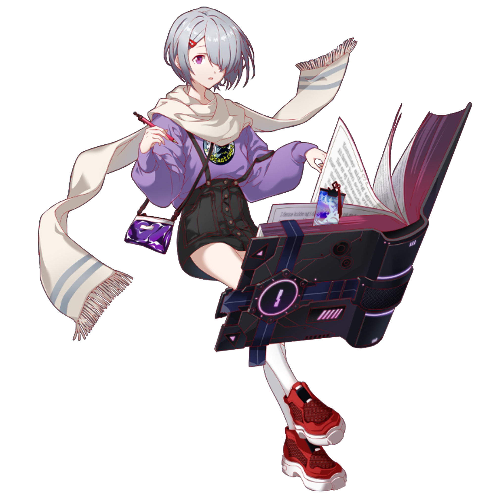
At the age of 15, he left home to make the most of his soprano voice and become an opera singer. Alas, his plays and songs did not strike a chord with audiences, and ultimately his voice broke, leaving him frustrated. However, the stage proprietor favorited him, and Hans was able to switch his focus to philology and philosophy. He made use of his travels around Europe to self-publish a travelogue. Later, his story “Agnete and the Merman” was released to little fanfare, but a reworking titled “The Little Mermaid” would eventually become one of Andersen’s most famous works. His many friends at the time included Victor Hugo and both the Alexandre Dumases.
While his fairy tales received little acclaim when he began, his persistence ultimately led to him becoming a revered writer later in life. Unfortunately, he was known to have a habit of going overboard when it came to love, and would send autobiographical pieces as love letters to those he fancied. Never learning from his follies, he would remain single throughout his life.
Even within ALICE, Andersen still clings on to the anxieties that haunted her past; however, on the whole she is leading a joyful second life. Still, her incredible clumsiness often leads to mistakes, and her nerves tend to make her explanations and excuses so flowery they become like fairy tales.
She is a Folklore, but not a member of Eclipse. Rather, she has a contract with the Discarded Data Institute. Its members regard her as a bit of a problem, and have to keep her on close watch, but they look upon her with affection. Incidentally, Andersen finds Ms. Sato far scarier than pawns from the Waste Area.
Bond 1 ▼
A 19th-century Danish writer of fairy tales, Andersen wrote 170 stories during his lifetime, most notably "The Little Mermaid", "The Ugly Duckling", and "The Snow Queen".Bond 2 ▼
They say he was born to loving parents – his father a practical cobbler, his mother a washerwoman of deep faith. As a child Hans would create stories using a puppet show stage his father made.At the age of 15, he left home to make the most of his soprano voice and become an opera singer. Alas, his plays and songs did not strike a chord with audiences, and ultimately his voice broke, leaving him frustrated. However, the stage proprietor favorited him, and Hans was able to switch his focus to philology and philosophy. He made use of his travels around Europe to self-publish a travelogue. Later, his story “Agnete and the Merman” was released to little fanfare, but a reworking titled “The Little Mermaid” would eventually become one of Andersen’s most famous works. His many friends at the time included Victor Hugo and both the Alexandre Dumases.
While his fairy tales received little acclaim when he began, his persistence ultimately led to him becoming a revered writer later in life. Unfortunately, he was known to have a habit of going overboard when it came to love, and would send autobiographical pieces as love letters to those he fancied. Never learning from his follies, he would remain single throughout his life.
Bond 3 ▼
It's said that Andersen inherited his compulsive lying from his father’s mother. However, this would later develop into a vivid imagination and aid his writing. Other ailments included extreme anxiety. In case of emergencies, he would carry a rope with him while walking, and when going to sleep, he would leave a note by his pillow that he was not dead, lest he be buried accidentally. One worry he could never shake was the feeling that, loke his father and grandfather, he would lose his mind before passing away.Even within ALICE, Andersen still clings on to the anxieties that haunted her past; however, on the whole she is leading a joyful second life. Still, her incredible clumsiness often leads to mistakes, and her nerves tend to make her explanations and excuses so flowery they become like fairy tales.
She is a Folklore, but not a member of Eclipse. Rather, she has a contract with the Discarded Data Institute. Its members regard her as a bit of a problem, and have to keep her on close watch, but they look upon her with affection. Incidentally, Andersen finds Ms. Sato far scarier than pawns from the Waste Area.
Andromeda

Bond 1 ▼
Daughter of King Cepheus of Aethiopia and Queen Cassiopeia. Andromeda was to be sacrifficed to a monster to quell the gods' anger, but she was ultimately saved by Perseus with Medusa's severed head.Bond 2 ▼
Andromeda was born to the king and queen of Aethiopia, and was raised to lead their people. Her mother, Cassiopeia, foolishly boasted that her daughter was more beautiful than the Nereids, which incurred the wrath of both them and Poseidon. The god of the sea then send tidal waves and disastrous floods to Aethiopia. King Cepheus, desperate to save his country, learned from an oracle that he must sacrifice his daughter to a sea monster to quell the gods’ anger. Despite resistance from her parent, Andromeda vowed to go through with the sacrifice in order to save her land and her people. After the public got wind of this solution, the king and queen had no choice but submit.Andromeda was chained to a large boulder and awaited her death. However, she was spared from her grim fate by Perseus, who happened to see her on his way back from slaying Medusa.
Bond 3 ▼
After she was saved from the monster, Andromeda abandoned the man she was set to marry and instead journeyed to Perseus’s home of Serifos to marry him.There, she would support Perseus, now king of Argos and Mycenae, and help start a lineage that would feature many famous heroes, such as Hercules and the Gemini twins, Castor and Pollux, among others.
In ALICE, Andromeda supports those around her and always does what is best for them when she can, trying to increase the number of opportunities they have available. Although she no longer sacrifices herself as dramatically as she once did, she is still relied upon by many in the Discarded Data Institute and Eclipse.
Antoinette
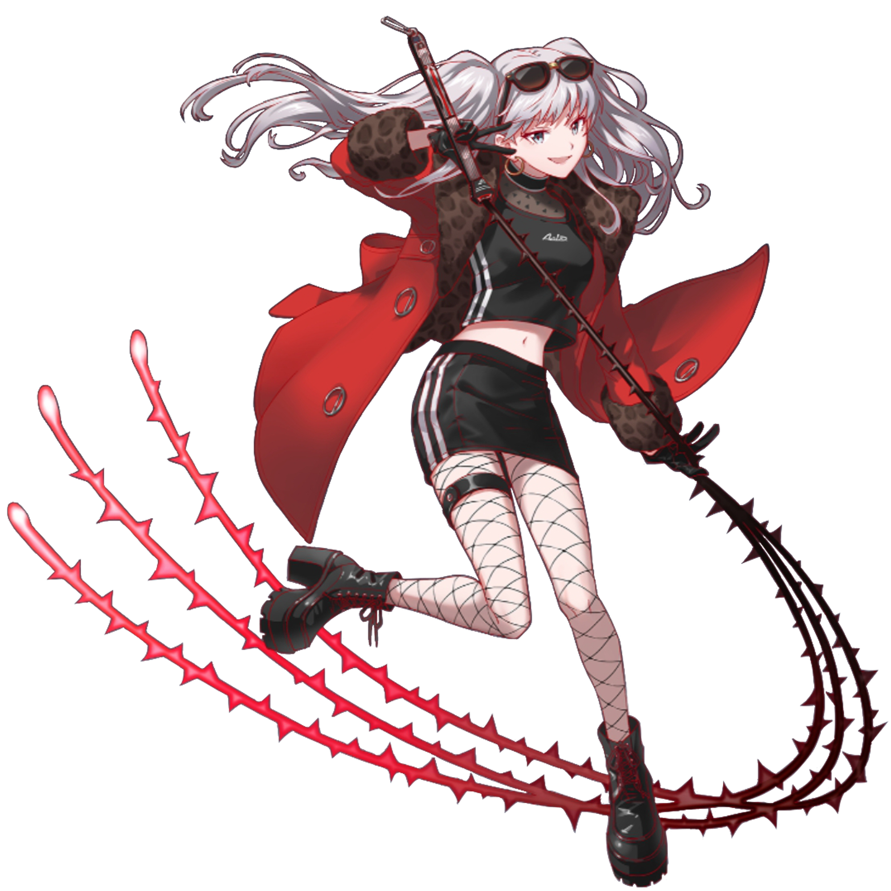
A bold trendsetter in fashion, Marie Antoinette had many copycats and admirers, but she met her tragic end at the guillotine.
However, her life was soon fraught with scandals. People talked of her animosity with Louis XV’s mistress Madame du Barry, and of frauds, scams, and rumors of love affairs with Swedish aristocracy. Her huge expenditures on jewels, theater, and dances also put pressure on France’s struggling economy. With increasing taxes for all citizens and tax exemptions for the wealthy, the French people began to foment revolution, with Marie Antoinette bearing a large brunt of their resentment.
Following the death of Louis XV, her mother Maria Theresa sent countless letters in worry for her daughter. They had no effect, though; Marie Antoinette was captured by French revolutionaries and sentenced to death by guillotine upon Place de la Concorde.
France’s rich culture of fragrances was greatly influenced by her bathing habits. At the time, France did not have a custom of bathing, and heavy musk scents were often worn to cover up body odor. By contrast, Marie Antoinette preferred softer herbal and floral scents since she had little body odor to hide. This quickly became a trend among the upper class.
She also believed that the queen should strive for the greatest beauty, so she had trendy fashion designer Rose Bertin produce a great number of innovative outfits to wow those around her. Marie Antoinette’s fashion sense garnered attention even outside of France, and aristocrats from Spain and Russia also began to follow her trends.
Even in ALICE, Antoinette’s cutting-edge fashion sense has earned her many admirers, though she does not seem interested in the fame.
Bond 1 ▼
Queen of Louis XVI of France.A bold trendsetter in fashion, Marie Antoinette had many copycats and admirers, but she met her tragic end at the guillotine.
Bond 2 ▼
Born as Maria Antonia, the eleventh daughter of the Austrian empress Maria Theresa. Marie Antoinette had no plans to marry into France. Things changed when her sister who had been betrothed to the king of Naples suddenly passed away, and another sister Maria Carolina, previously promised to the French crown prince, went to Naples instead. Thus talks began to marry Maria Antonia into French aristocracy in Maria Carolina’s place. Though her queenship in France was largely by chance, the fair princess was warmly welcomed by the French people.However, her life was soon fraught with scandals. People talked of her animosity with Louis XV’s mistress Madame du Barry, and of frauds, scams, and rumors of love affairs with Swedish aristocracy. Her huge expenditures on jewels, theater, and dances also put pressure on France’s struggling economy. With increasing taxes for all citizens and tax exemptions for the wealthy, the French people began to foment revolution, with Marie Antoinette bearing a large brunt of their resentment.
Following the death of Louis XV, her mother Maria Theresa sent countless letters in worry for her daughter. They had no effect, though; Marie Antoinette was captured by French revolutionaries and sentenced to death by guillotine upon Place de la Concorde.
Bond 3 ▼
Even after marrying into France, Marie Antoinette was known to have preserved many of the custom of her homeland, including her fondness for baths. She had a bathtub brought into her room.France’s rich culture of fragrances was greatly influenced by her bathing habits. At the time, France did not have a custom of bathing, and heavy musk scents were often worn to cover up body odor. By contrast, Marie Antoinette preferred softer herbal and floral scents since she had little body odor to hide. This quickly became a trend among the upper class.
She also believed that the queen should strive for the greatest beauty, so she had trendy fashion designer Rose Bertin produce a great number of innovative outfits to wow those around her. Marie Antoinette’s fashion sense garnered attention even outside of France, and aristocrats from Spain and Russia also began to follow her trends.
Even in ALICE, Antoinette’s cutting-edge fashion sense has earned her many admirers, though she does not seem interested in the fame.
Archimedes

Bond 1 ▼
A mathematician, physicist, astronomer, inventor, and engineer of ancient Greece who made many influential discoveries, including Archimedes' principle - a law of physics - and the law of the lever.Bond 2 ▼
Born around 287 BC, in Syracuse, Sicily, Archimedes was related to Hiero II, who ruled that area. Famously, the story goes that Archimedes' principle was discovered when Hiero II wanted to know whether his crown was truly made of pure gold. When Archimedes got into the bath after receiving the request, he noticed the hot water overflowing, and realized that if he submerged the crown in water, a volume equal to that of the crown should be displaced. It is said that this revelation excited him so much that he leaped out of the bath shouting "Eureka!" before proceeding to run naked through town.The truth of this questionable, however, since Archimedes did not write of the incident himself. The tale first appears in a text written 200 years after his death.
That's not to say Hiero II did not rely on Archimedes' help, however. Indeed, he made a variety of request to the mathematician, including the creation of a large ship for tourism, transportation, and warface.
Archimedes is also said to have contributed to Syracuse's protection with inventions like the Claw of Archimedes, which could latch onto and capsize nearby enemy ships, and a heat ray that could set enemy ships on fire using the rays of the sun. Although it's unclear whether Archimedes actually invented these weapons, modern researchers have managed to built them and prove they are viable.
Bond 3 ▼
Legend also has it that Archimedes' weapons were used during the Second Punic War to great effect against the Roman army. It's said the Claw of Archimedes and a catapult using torsion springs helped win the siege of Syracuse between 215 BC and 212 BC.This victory made the people incautious, however, and he Roman army managed a successuful assault during the city's celebrations of the goddess Artemis. Well aware of Archimedes' genius, the Roman commander Marcellus ordered his soldiers to leave Archimedes unharmed.
Not knowing what Archimedes looked like, a soldier asked his name upon finding him in his garden. Archimedes, however, had been working on some figures in the earth the earth-exactly where the soldier now stood. He shouted at the soldier for ruining his work. The soldier asked his name again, but since Archimedes ignored him, he lashed out and killed him.
In ALICE, Archimedes is as studious as ever and carries a piece of chalk around so she can write out figures and fotmulas wherever she goes. Although she values her daily routines above all else, her relaxed and slow-paced way of life has no ill effect on her ability to complete a job quickly. Archimedes' expertise is in high demand among large corporations, but she will only take on work that interests her.
Asclepius

Bond 1 ▼
A famous doctor in Greek mythology. He was said to be the child of the sun god Apollo and a mortal woman, and that the centaur Chiron instructed him in the art of medicine. He eventually learned to raise the dead.Bond 2 ▼
As one story goes, Coronis, daughter of Lapiths, was loved by Apollo and became pregnant with Asclepius. Sometime later, Apollo heard that Coronis was unfaithful to him, so he killed her. Whether or not she was unfaithhul remained a mystrey; some claimed she was, while others believed it was an exuse Apollo's messenger crow had made up after slacking in its duties. Regardless, Apollo later learned Coronis was pregnant with a child, and thus cut him out and brought him into the world.To raise the child, Apollo entrusted him to the centaur Chiron, who was erudite and unloke the other more savage members of his kind. Chiron thaught Asclepius music, prophecy, hunting, and more, but the boy showed a strong propensity for medicine in particular. His talent for healing would later exceed that of Chiron himself.
Bond 3 ▼
Once older, Asclepius left the care of Chiron and was said to have journeyed with ason and the Argonatus aboard the Argo to find the Golden Fleece. It was there that Asclepius met heroes like Hercules and Orpheus, and his travels with them afforded him many opportunities to hone his medical skills. He even gained the ability to raise the dead by receiving Medusa's blood from Athena. Unfortunately, this resulted in souls begin stolen from the underworld, which incurred the wrath of its lord, Hades. Hades argured to Zeus that Asclepius's gift was disrupting the natural order. Zeus agreed his skills were a problem, so he struck him down with his lightning bolt and killed him.Asclepius was recognized posthumously for his deeds, being deified in the constellation Ophiuchus, the serpent-bearer. The snake that is often seen wrapped around his staff is used as a symbol of medicine in modern times and displayed on many medical buildings.
In ALICE, Asclepius, much like her historical counterpart, lives to aid others, and even volunteers as a counselor for sick children.
However, she also tends to engage in risky tactics, which is odd, considering she doesn't really have a thirst for adventure. Whatever the reason, it must be a good one...
Benkei
Bond 1 ▼
A warrior monk of the late Heian Period.He served Minamoto no Yoshitsune, and the story of how he met the man on the Gojo Bridge, and how Benkei died standing while protecting his lord are particulary famous stories of his life.
Bond 2 ▼
Not much is known about Benkei aside from his service to Yoshitsune. Many famous anecdotes of Benkei’s life were actually based on tales told of him after his death.In the Gikeiki, he is claimed to be of Kumano Betto lineage, and his childhood name was Onikawa. Legend says he remained in his mother’s womb for eighteen months, and by the time he was born, he was already two or three years old. He joined the monks of Mt. Hiei, but was driven out for his love of martial arts and penchant for fighting.
He then took the name of Benkei Musashibo and wandered Kyoto with the goal of taking away one thousand blades from samurai he dueled. It was inly after he had collected 999 blades that he met his future lord Yoshitsune (then Ushiwakamaru) atop the Gojo Bridge. The young warrior challenged Benkei to a fight and defeated him.
Benkei sensed that his defeat may have been preordained from previous life, and from then on swore to serve Yoshitsune.
Benkei’s’ loyalty was unshakable. He fought tirelessly at Yoshitsune’s side during the Genpei War, and even when Yoshitsune had lost Kyoto to Minamoto no Yoritomo, Benkei stood and protected his lord to his last breath. It is said that he died standing up while fending off Yoshitsune’s pursuers. The story of the “Standing Death of Benkei” is still told to this day.
Bond 3 ▼
Tales of Benkei are told through Kabuki and Noy theater as well. A popular story is “Kanjincho”, a Kabuki play in which Benkei is one of the main characters. In the story, Yoshitsune and his follower Benkei are on the run from Yoritomo and en route to Oshu when they are stopped at a gate. To pass through the gate they disguise themselves as Buddhist Mountain priests seeking donations for the Todai Temple. However, the guardsmen aren’t convinced and ask to see a list of their donors. Benkei, using his prior experience as a mountain priest, pulls out a scroll and eloquently reads a fake list of names. This nearly works, but one of the guardsmen notes that Yoshitsune’s behavior is odd. Benkei quickly pretends that Yoshitsune is his attendant and proceeds to beat him with his staff, and this manages to fool the guardsmen. Afterward, Benkei bursts into tears and apologizes to Yoshitsune for beating him.In ALICE, Benkei views cosmetics as weapons, and though she lives for them, she is still very fond of Ushiwakamaru, who is otherwise known as Yoshitsune.
Bismark

Bond 1 ▼
Otto von Bismark was prime minister of the Kingdom of Prussia who unified Germany. He served ass the first chancellor of the German Empire for about 20 years and was known as the Iron Chancellor.Bond 2 ▼
Otto Eduard Leopold von Bismark-Shönhausen was born in 1815 in the Kingdom of Prussia to an upper-class family of Junker land-owning nobles in eastern Germany. As a child, he studied at a boarding school in the royal capital of Berlin, but this only felt like prison to him. Whenever he recalled this school, he said he had no fond memories there – the school’s foundational principle emphasized equality for all, which led to Bismark being ostracized by his peers for the “von”, the mark of nobility, in his name. at gymnasium – a preparatory school for higher education – he excelled in German and linguistics, and while others recognized his expressiveness with language, he was also criticized for his lack of diligence.In college, Bismark studied law and political science to become a civil servant. However, it was said that studies were not a major priority for him. He often would drink with friends or throw empty bottles out of windows, and when accosted over this, he would even set his dog loose on the dean of students. Over the course of a year and a half, he had gotten into over twenty major fights. In 1835, he passed the bar exam and became a Prussian official. His plan to become a diplomat went unrecognized, however, and he eventually grew bored and resigned. He returned to his hometown and focused on managing his land.
Due to his involvement in the politics of land jurisdiction since the end of 1846, he was elected to the vacant Magdeburg Estates seat in May of the following year. He later became a member of the Landtag. However, he was still very conservative at that time and gave no need to any ideas about German unification or political reform, going o far as to defend the monarchy during the March Revolution. The king then appointed him as the Prussian envoy to the Frankfurt Bundestag, ambassador to Russia, and ambassador to France. During this time, he learned more deeply of the situation in Europe, leading him to consider the need for Prussia to participate in a unified Germany.
Bond 3 ▼
King Wilhelm I of Prussia appointed Bismark prime minister of Prussia in 1862. When he and the king attempted to reform the government and expand the military, they were opposed by the Prussian House of Representatives. It was here that Bismark delivered his famous Iron and Blood speech, in which he stated, “Not through speeches and majority decisions will the great questions of the day be decided, […] but by iron and blood”. Iron represented weapons, and blood meant the bloodshed of soldiers – Prussia would become a military power, regardless of the House of Representatives’ decisions. From this point on, Bismark became known as the Iron Chancellor.Victory in the Austro-Prussian War in 1866 eliminated Austrian power, and the victory in the Franco-Prussian War of 1870-71 brought Germany together under one flag, marking Bismark the first Chancellor of the German Empire. For the next 20 years, he controlled relations among European countries through his foreign policy, nicknamed Bismarckian diplomacy. First, he isolated France, which had been defeated in the Franco-Prussian War, suppressed its reemergence, and balanced conflicts with other countries through complex secret military alliances. However, when Wilhelm I died in 1888, his successor, Wilhelm II, dismissed Bismark’s policies as passive. Bismark resigned in 1890 and later passed away on July 30th, 1898. He requested his tombstone be inscribed with the words, “A loyal German servant of Emperor Wilhelm I.
In ALICE, Bismark is friendly, humble, and hospitable. However, he also has a fondness for alcohol and ousters, and tends to lose himself whenever these two things are involved. He also will occasionally show a more hot-blooded side of himself, and may not hesitate to use forceful measures when riled up – perhaps the influence of the impassioned Iron and Blood speech. However, this is also a reflection of his political conviction to protest and better the lives of those with whom he is associated.
Captain Drake
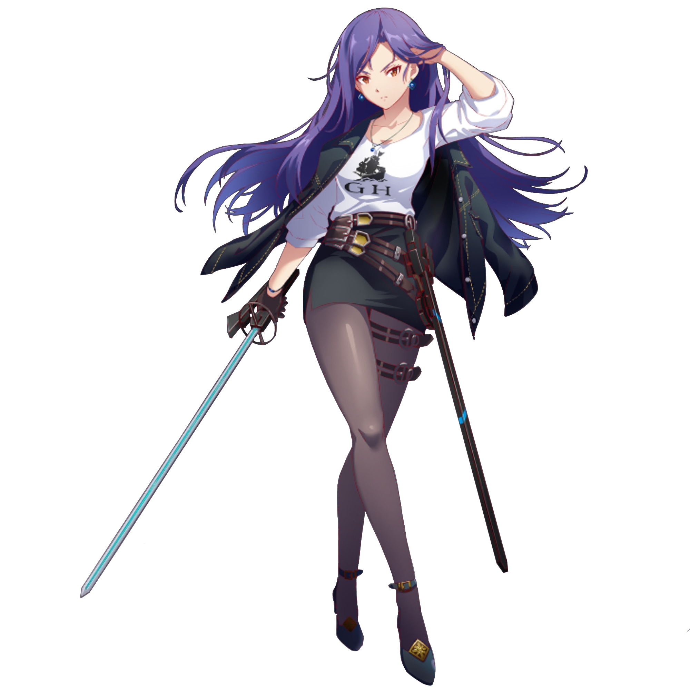
Tales tell of how in his early seafaring years, he sailed with a relative's ships until one day, Spanich naval forces decimated the fleet. This incident is attributed to having sowed the seeds of his deep enmity toward Spain.
He earned a reputation as a pirate in the West Indies, plundering towns and Spanish ships. During his voyage around the world, he also targeted ships carrying Spanish-owned treasure. Though Drake paid some of his spoils to his investors, the total value he accrued far exceeded the cost of their sponsorship, and he was left with an enormous profit.
These merits earned him the title of vice admiral in the English fleet. As vice admiral, he continued to launch attacks on Spain. It is said that during the defeat of the Spanish Armada, Drake was the one who actually commanded the English forces, rather than the admiral he served.
Even within his own ranks, he was known to take on a draconian attitude. Anyone who threatened to disrupt the balance of order and harmony within the fleet was subjected to harsh punishment; however, he always made sure to give proper burials to those he sentenced to death.
Until his own passing, Drake continued to fight against Spain and sail the world. His final hours were not spent on the battlefield but in a sickbed, struck ill with a disease he caught while out at sea.
Perhaps it is because of this experience with illness that the Drake in ALICE seems to downright despise anything unsanitary.
As extra trivia: Drake's ship, the Golden Hind, was previously known as the Pelican.
Bond 1 ▼
Privateer, vice admiral of the English fleet, and the first Englishman to circumnavigate the globe.Tales tell of how in his early seafaring years, he sailed with a relative's ships until one day, Spanich naval forces decimated the fleet. This incident is attributed to having sowed the seeds of his deep enmity toward Spain.
Bond 2 ▼
Since Drake was involved in the seafaring world from a young age, by his twenties, he had already procured his own ship and become its captain. However, the vessel was destroyed when Spanish warships attacked the fleet he had joined. From then on, he was said to have developed a profound hatred of anything Spanish.He earned a reputation as a pirate in the West Indies, plundering towns and Spanish ships. During his voyage around the world, he also targeted ships carrying Spanish-owned treasure. Though Drake paid some of his spoils to his investors, the total value he accrued far exceeded the cost of their sponsorship, and he was left with an enormous profit.
These merits earned him the title of vice admiral in the English fleet. As vice admiral, he continued to launch attacks on Spain. It is said that during the defeat of the Spanish Armada, Drake was the one who actually commanded the English forces, rather than the admiral he served.
Bond 3 ▼
Drake's formidable wrath toward those he considered enemies earned him the name "Draco", among the Spanish. It was a name referring to the dragon, an incarnation of the devil.Even within his own ranks, he was known to take on a draconian attitude. Anyone who threatened to disrupt the balance of order and harmony within the fleet was subjected to harsh punishment; however, he always made sure to give proper burials to those he sentenced to death.
Until his own passing, Drake continued to fight against Spain and sail the world. His final hours were not spent on the battlefield but in a sickbed, struck ill with a disease he caught while out at sea.
Perhaps it is because of this experience with illness that the Drake in ALICE seems to downright despise anything unsanitary.
As extra trivia: Drake's ship, the Golden Hind, was previously known as the Pelican.
Cleopatra
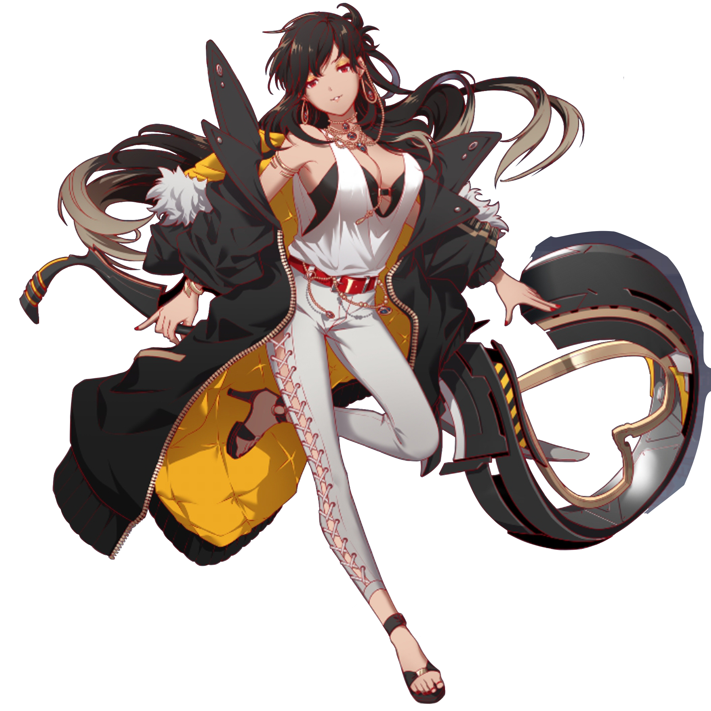
She ruled over her country with the backing oh Julius Caesar, dictator of Rome. Many stories and works of art that depict her with Caesar still exis today.
Following her father's death, Cleopatra took the throne of Egypt together with her youngerbrother, as was decreed by his will. However, not long after their reign began, tensions rose between the two siblings; Cleopatra believed that Egypt needed Rome's support to last, while her brother sought to leave Rome for good. These tensions soon developed into an all-out civil war. The people of Alexandria then joined in the uprising against Cleopatra and drove her from the throne to the neighboring region of Pelusium.
Caesar's forces began to march upon Egypt around this time. Cleopatra approached them in order to earn Rome's backing to restore her place as Egypt's pharaoh.
Her routines are still popular in modern times, and her favorite rose petals, honey, and gold leaf are widely known to have scientific benefits. Even the teas and foods she meticulously chose for herself are said to have great effects for beauty. Though she was naturally blessed with good looks, she worked hard daily to preserve them.
Cleopatra used her stunning visage to seduce world leaders and uphold her country's power, inspiring many stories, shows, and movies based on her life. From Shakespeare's tragedy Antony and Cleopatra to her appearance in Dante's Divine Comedy as a queen of Lust, Cleopatra's postmortem legacy has inspired many creators throughout the world.
Thankfully, the Cleopatra living in ALICE bears no influence from Dante's demonic vision of her. Her admirers increase day by day, flocking to her great beauty.
Bond 1 ▼
The last pharaoh of the Prolemaic Dynasty of Egypt.She ruled over her country with the backing oh Julius Caesar, dictator of Rome. Many stories and works of art that depict her with Caesar still exis today.
Bond 2 ▼
Just before Cleopatra ascended as pharaoh of the Ptolemaic Dynasty, conflicts had already broken out over the rights to royal authority. One account tells of how Cleopatra's father had also killed his elder sister, Cleopatra's aunt, to take the throne.Following her father's death, Cleopatra took the throne of Egypt together with her youngerbrother, as was decreed by his will. However, not long after their reign began, tensions rose between the two siblings; Cleopatra believed that Egypt needed Rome's support to last, while her brother sought to leave Rome for good. These tensions soon developed into an all-out civil war. The people of Alexandria then joined in the uprising against Cleopatra and drove her from the throne to the neighboring region of Pelusium.
Caesar's forces began to march upon Egypt around this time. Cleopatra approached them in order to earn Rome's backing to restore her place as Egypt's pharaoh.
Bond 3 ▼
Cleopatra has been lauded as one of the great beauties of history. One writer even claims that, had her beautifully prominent nose been just a bit shorter, the course of the world's history would have changed.Her routines are still popular in modern times, and her favorite rose petals, honey, and gold leaf are widely known to have scientific benefits. Even the teas and foods she meticulously chose for herself are said to have great effects for beauty. Though she was naturally blessed with good looks, she worked hard daily to preserve them.
Cleopatra used her stunning visage to seduce world leaders and uphold her country's power, inspiring many stories, shows, and movies based on her life. From Shakespeare's tragedy Antony and Cleopatra to her appearance in Dante's Divine Comedy as a queen of Lust, Cleopatra's postmortem legacy has inspired many creators throughout the world.
Thankfully, the Cleopatra living in ALICE bears no influence from Dante's demonic vision of her. Her admirers increase day by day, flocking to her great beauty.
Daji

Bond 1 ▼
A princess during the late Shang Dynasty who caught the eye of King Zhou. Daji was a malevolent woman who is said to have lived lavishly and found pleasure in doling out cruel punishmentBond 2 ▼
Clan name Ji, courtesy name Da, Daji was a consort of the Shang Dynasty who lived around the 11th century BC. She corrupted the once-great King Zhou to the point that his subjects referred to him as a mindless ruler.Rumors of her cruelty passed through generations-tales told of her laughter as she watched the punishments she'd cajoled the king into performing. The most famous of these tortures were the Bronze Toaster and the Snake Pit. In the first, a copper cylinder coated with oil was laid over burning coals, and the accused was forced to walk barefoot across it. In the second, tons of poisonous snakes and insects were placed in a hole, into which the accused was dropped.
False testimony from Daji forced the sitting empress out of her position. The empress' hands were burned with a copper pole in punishment, but she refused to yield. Though she continued to appeal to King Zhou for her innocence, she ultimately lost her life.
After that, Daji continued to use King Zhou's favor as a shield for all kinds of extravagance and evils. A phrase in Chinese that means lavish feasts, "pond of alcohol and forest of meat", comes from a legendary banquet of Daji's, which allegedly had ponds of pure alcohol, meat draped over trees, and naked men and women forced to chase each other.
In the end, she was killed by King Wu of Zhou, successor to King Wen, who had raised an army to take down the tyrannical king. Interestingly enough, in the "Fengshen Yanyi," she was captured by Nuwa and killed by Taigong Wang, not King Wu.
Bond 3 ▼
A common myth is that Daji's body was possessed by the spirit of a nine-tailed fox. The Yuan Dynasty novel "Quan Xiang Ping Hua" linked her to the fox, and the "Fengshen Yanyi" popularized this idea in the Ming Dynasty.Some novels and other works of fiction depict Daji's actions as not necessarily rooted in evil but rather a means to achieving an end. Still others do not even portray Daji as a fox or some other non-human creature. For example, in the "Fengshen Yanyi", Nuwa had personally ordered Daji to trick the king, and Daji's many atrocities are explained as a result of her perverting Nuwa's orders to suit her own purposes.
Even in ALICE, her wicked personality persists, and occasionally she behaves wildly, showing glimpses of the cruelty that lies beneath. She enjoys playing with minds and adding to her collection of pawns under her control. There are also rumors that she is seeking to connect with influential people in an attempt to secure her position as the star of the entertainment district. These are just rumors, however-her true motives for her activities, if not simply for her own amusement, are unknown.
Enkidu
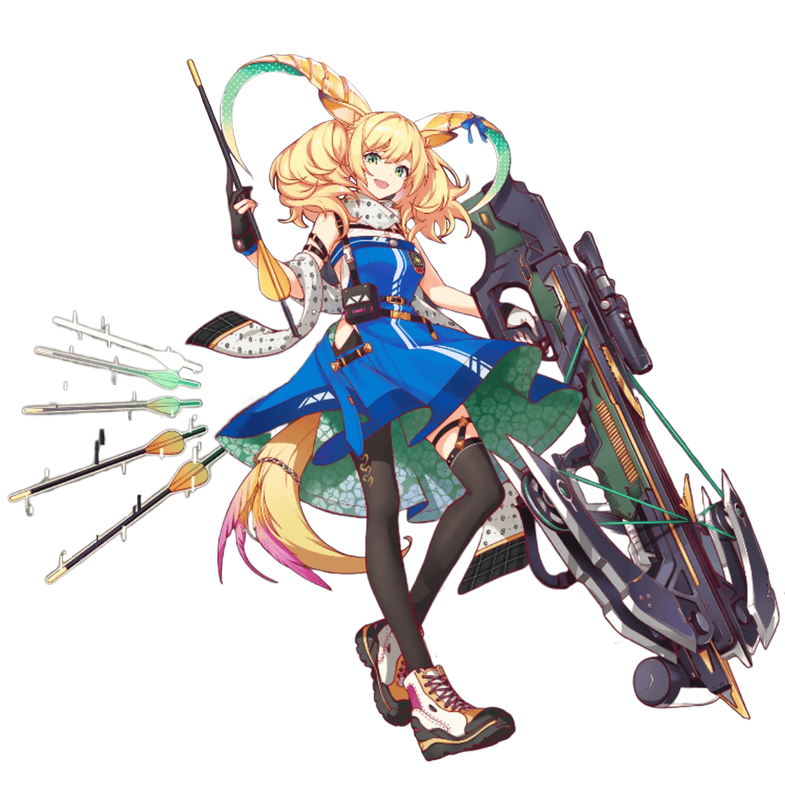
With his long hair, horns, and tail, Enkidu was more beast than man, spending his time grazing with the creatures who called the wilderness home. He was the guardian of these creatures, and one day defended them from a hunter. When Gilgamesh learned of this, he sent the hunter back with the temptress Shamhat. The two waited three days at a watering hole in the foerst, after which Enkidu arrived with his animal comrades. Though the animals fled, Enkidu was drawn to the temptress by bread, honey, and alchohol. This opened the feral creature's mind to the wonders of civilization.
Shortly thereafter, Enkidu learned of the tyrannical Gilgamesh and yearned for someone to match his might. Gilgamesh, too, had a vision showing he would be visited by a new comrade. Shamhat dressed Enkidu in warrior's garb and took him to Uruk to see Gilgamesh. The two warriors clashed as the gods intended, but they recognized the strength in each other. The battle ended with Gilgamesh declaire Enkidu his brother in arms.
The Enkidu of ALICE was a feral child from the moment she was born. She is a protector of beasts and spends much of her time away from the General Area, instead residing in the Waste Area tending to the abandobed animals there. Though she separates herself from people, she loves their food.
Bond 1 ▼
Best friend to the ancient Sumerian King Gilgamesh, this warrior was created by the Gods from clay to guide and advise Gilgamesh. He was venerated as a protective deity of animal and livestock.Bond 2 ▼
Enkidu was not a man, but rather a being created from clay by the creation goddess Aruru and given life by the sky god Anu. Once the god of knowledge Enki imbued him with a mind and the was god Ninurta gave him strength, Enkidu was complete and ready to fulfill his duty as a foil to the rampaging Gilgamesh.With his long hair, horns, and tail, Enkidu was more beast than man, spending his time grazing with the creatures who called the wilderness home. He was the guardian of these creatures, and one day defended them from a hunter. When Gilgamesh learned of this, he sent the hunter back with the temptress Shamhat. The two waited three days at a watering hole in the foerst, after which Enkidu arrived with his animal comrades. Though the animals fled, Enkidu was drawn to the temptress by bread, honey, and alchohol. This opened the feral creature's mind to the wonders of civilization.
Shortly thereafter, Enkidu learned of the tyrannical Gilgamesh and yearned for someone to match his might. Gilgamesh, too, had a vision showing he would be visited by a new comrade. Shamhat dressed Enkidu in warrior's garb and took him to Uruk to see Gilgamesh. The two warriors clashed as the gods intended, but they recognized the strength in each other. The battle ended with Gilgamesh declaire Enkidu his brother in arms.
Bond 3 ▼
One day, a bored Gilgamesh decided to venture into the forest and defeat the guardian Humbaba. Enkidu, though not keen on fighting the forest guardian, decided to join the king and observe. However, the gods viewed both of the men as guilty of the transgression, and thus decided to punish the pair by declarig that one of them must forfeit their life. Given that gods deemed Gilgamesh unable to kill, Enkidu was forced to endure a fever for 12 days, telling his friend to never forget him with his last final breath.The Enkidu of ALICE was a feral child from the moment she was born. She is a protector of beasts and spends much of her time away from the General Area, instead residing in the Waste Area tending to the abandobed animals there. Though she separates herself from people, she loves their food.
Eostre
Bond 1 ▼
A Germanic spring goddess said to be the namesake of the Easter holiday. Her name means "morning", "dawn", and "shining."Bond 2 ▼
There is a tale that states Eostre once saved trapped birds, and to prevent them from falling being trapped again, transformed them into hares. The hares, to show their appreciation for spring, gifted the goddess with eggs painted in spring colors. Eostre rejoiced, and spread the eggs to others with a spring breeze, the hares following along. Some believe this to be the origin of the Easter Bunny and the custom of decorating eggs.Some other theories about Eostre also exist. The ancient Saxons worshiped Eostre in their month of Eostremonat, during which they held a festival called Pascha, coming from the Greek word for "resurrection/rebirth". This, some claim, is the origin of the Easter holiday.
However, it's possible that these stories of Eostre as a goddess are just fabrications.
The Eostre of ALICE carries a large backpack filled with eggs. It's possible they hatch into rabbits due to the widespread knowledge of Easter and Eostre as a goddess.
Bond 3 ▼
Some claim that Eostre was also viewed as the goddess of fertility, perhaps because of rabbits' high reproductive rate, or because eggs symbolize reproduction, resurrection, and new life.Perhaps because of this perception, Eostre in ALICE, despite her small stature, speaks and acts like an adult. Though she doesn't seem to realize she's doing it, she is always tending to others, even if they don't need care. Her tiny figure hauling a large bag and wandering around to see if others need help has quickly garnered her a lot of attention.
Konohana Sakuya has caught the kind eye of Eostre as well, as the young princess struggles to get close to others. Fortunately, Eostre happens to be one of the few people around whom Sakuya feels comfortable.
Eurystheus
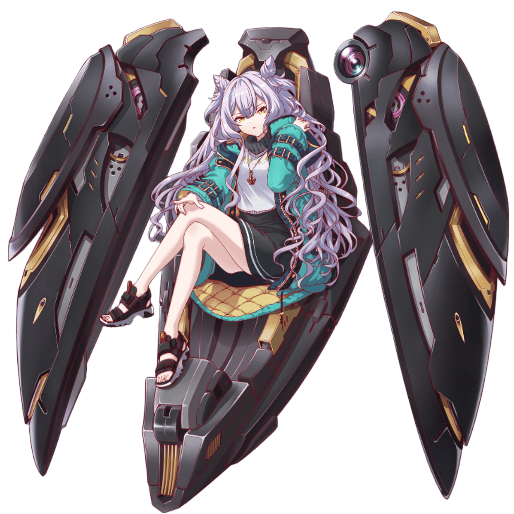
In the first labor, Hercules killed a lion. When he returned with its body, Eurystheus was so astonished and afraid, he forbade Hercules from bringing any further prey into the city. In fact, his fear was so great, he had a large bronze jar made, in which he could hide from Hercules whenever the hero returned.
In the next labor, Hercules slew the hydra. Since he had help, however, Eurystheus refused recognize the deed. The same happened with another labor, one in which Hercules cleaned out stables that had not been touched for 30 years. Because Hercules had requested a reward for the task he was requeated a reward for the task he was doing as penance, Eurystheus said, the labor would not count. In this way, the ten labors Hercules originnaly set out to accomplish on the advice of an oracle became twelve.
In the end, fearing Hercules had set his sights on his throne, Eurystheus banished him.
Theseus, kinf of Athens, eventually came to their rescue and defeated Eurystheus in battle. Leaving his sons behind, Eurystheus fled in an attempt to save himself, but was captured by Hercules's son Hyllus.
Legend has it that Eurystheus died at the hand of Hyllus. Some versions of he tale also say tha he begged for his life before he died, telling Alcmene that the goddess Hera was responsible for how he had treated Hercules. Alcmene, however, could not forgive Eurystheus for makig Hercules suffer, and he was killed.
In ALICE, Eurystheus remains as cowardly and arrogant as ever. Indeed, so much has remained unchanged that she will still take shelter inside a jar when afraid. Though she's always making impossible requests of others when she's on a job with the Discarded Data Institute, Eurystheus seems to have realized on some level that this a bad habit she needs to fix, and is doing so in her own way.
Bond 1 ▼
A Mycenaean king and grandson of Perseus in Greek mythology, Eurystheus is known for assigning the twelve labors of Hercules. He is often depicted as mean and cowardly.Bond 2 ▼
In greek mythology, Eurystheus was Perseu's grandson and a relative of Hercules. He was the king who cruelly tasked Hercules with completing twelve impossible feats, or labors.In the first labor, Hercules killed a lion. When he returned with its body, Eurystheus was so astonished and afraid, he forbade Hercules from bringing any further prey into the city. In fact, his fear was so great, he had a large bronze jar made, in which he could hide from Hercules whenever the hero returned.
In the next labor, Hercules slew the hydra. Since he had help, however, Eurystheus refused recognize the deed. The same happened with another labor, one in which Hercules cleaned out stables that had not been touched for 30 years. Because Hercules had requested a reward for the task he was requeated a reward for the task he was doing as penance, Eurystheus said, the labor would not count. In this way, the ten labors Hercules originnaly set out to accomplish on the advice of an oracle became twelve.
In the end, fearing Hercules had set his sights on his throne, Eurystheus banished him.
Bond 3 ▼
After Hercules's death, his children were forced to flee from Eurystheus, who believed they were after his throne. Although they went after into hiding with their grandmother Alcmene, they were on the run again after Eurystheus threatened their protectors.Theseus, kinf of Athens, eventually came to their rescue and defeated Eurystheus in battle. Leaving his sons behind, Eurystheus fled in an attempt to save himself, but was captured by Hercules's son Hyllus.
Legend has it that Eurystheus died at the hand of Hyllus. Some versions of he tale also say tha he begged for his life before he died, telling Alcmene that the goddess Hera was responsible for how he had treated Hercules. Alcmene, however, could not forgive Eurystheus for makig Hercules suffer, and he was killed.
In ALICE, Eurystheus remains as cowardly and arrogant as ever. Indeed, so much has remained unchanged that she will still take shelter inside a jar when afraid. Though she's always making impossible requests of others when she's on a job with the Discarded Data Institute, Eurystheus seems to have realized on some level that this a bad habit she needs to fix, and is doing so in her own way.
Faust

Bond 1 ▼
The protagonist in the play "Faust" who makes a deal with the demon Mephistopheles in an effort to learn everything there is to know about this world. The story is likely based on a legend about an actual German alchemist.Bond 2 ▼
Seeking knowledge, Faust learns all he can about philosophy, law, medicine, and theology. In spite of all the understanding he has gained, however, Faust laments and desires more. This is when Mephistopheles appears, enticing him with untold pleasures in exchange for Faust's soul when he dies. Indifferent to the afterlife, Faust agrees to hand over his soul if Mephistopheles can show him something so sublime, he wants it to last forever. With this wager made, Mephistopheles takes Faust to indulge in a variety of pleasures and travel classical and mythical realms.In Part One, Faust has a tragic romance with a woman named Gretchen. In Part Two, Mephistopheles serves an emperor of a crumbling nation and suggests he restore the empire's finances by issuing paper money based on non-existent buried treasure. Mephistopheles then brings Faust on other adventures, including the suppression of a rebellion. Later, when Faust decides he wants to reclaim land that is underwater, the gray hag "Care" blinds him. In final scenes of the play, Faust talks of completing his greatest project before his death. When he passes, Faust's soul is saved from Mephistopheles's clutches and receives salvation in heaven because of his late lover Gretchen's prayers.
Bond 3 ▼
The character Faust is said to be based on a Doctor Johann Georg Faust, an astrologer and alchemist who lived around the 15th and 16th centuries in Germany.Information on the historical Doctor Faust is difficult to verify. It's said he was born in either 1466 or 1480, and he may have been one of the 16 who received a degree in divinity from Heidelberg University in 1509, but it's also possible this is a record of a different Faust.
Historical records also seem to suggest Martin Luther criticized Doctor Faust for borrowing the devil's powers, and that he was employed by Baron von Staufen. While no document has definitively proven the existence of a historical Faust, it's likely the now legendary character was based on a man (or men) who once walked this earth.
Doctor Faust is believed to have died when one of his alchemical experiments failed, exploding and scattering what remained of his body. This is possibly the source of the legend in which Faust made a pact with a demon who stole his soul and scattered his remains when he died.
In ALICE, Faust is still as obsessed with gaining knowledge as she was in Goethe's play. After borrowing the demon's powers to discover more about the past, present, and future, however, she now lives in a constant state of all-knowing boredom. To spice things up, Faust will occasionally start plotting someone's downfall using methods more twisted than ever. Usually her plans are so twisted, they come full circle so that she ends up helping her would-be victim instead.
Freesia

Bond 1 ▼
As a token of my gratitude, I give you Freesia. A Folklore born from the phenomenon of expressing gratitude in the world of ALICE. She is a combination og freesia flowers and "the feeling of gratitude".Bond 2 ▼
In the world of ALICE, freesia flowers have become a symbol of "gratitude" and are loved and cherished by all. In the scene of a movie by the same name, "Freesia", there is a scene in which a freesia flower is given as a token of gratitude.This scene scene soon became a viral meme and cultural phenomenon. Since the film took place in the world of ALICE, it grew awareness of the virtual woorld and significantly increased the number of ALICE users. In a way, the movie and ALICE have an inseparable relationship.
Bond 3 ▼
Both the movie "Freesia" and the phenomenon it brought have become so well known to the public, if you gave someone a freesia flower, they would care for it as if it were their child.Perhaps this tendency gave birth to Folklore, Freesia. She appears as a young girl with the childlike habit of speaking her mind very honestly. Maybe she is the product of an "ideal" epression of love, formed from the wishes of those who cannot express their feelings freely in today's society.
However, she has been known to meddle in the affairs of thise who she feels are "dishonest", causing trouble alonf the way. She is still too young to fully understand the subtleties of thr human heart. Despite this, she is undeniably a healing force in ALICE.
Galen
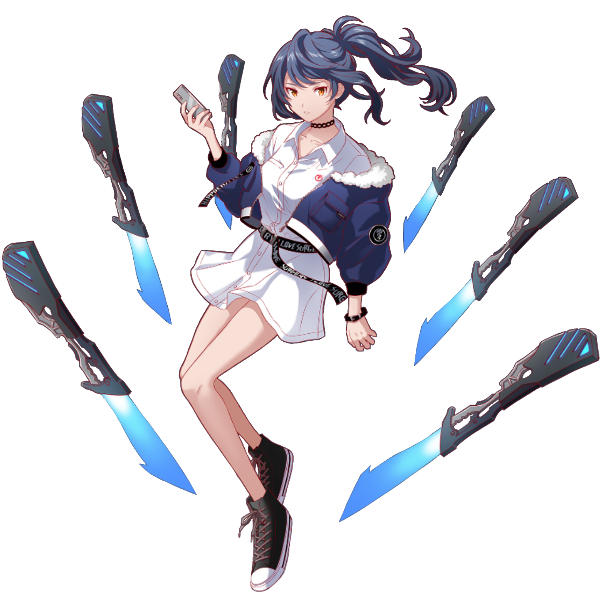
Once he was home again, Galen worked at a swordsman training facility, where he gained years of medical experience. After moving to Rome, he focused on treatment rather than belonging to any of the multiple established medical schools around. The name he made for himself caught the attention of Emperor Marcus Aurelius, who asked him to become the court physician.
Galen's medical theories would heavily influence medicine in Europe and the Middle East for over a thousand years, but modern medicine began to expose some of their flaws, such as arteries and veins being part of different systems. In ALICE, Galen is fully aware of such mistakes, and sometimes chooses to put on a smile instead of calling attention to them. But she knows bad medicine is bad medicine, and her exceptional clinical care is relied upon by many people.
Bond 1 ▼
A Greek physician and surgeon in the Roman Empire whose work in clinical physiology and anatomy revolutionized madical theory. He made a name fot himself in the empire and was even invited by Marcus Aurelius to be the court physician.Bond 2 ▼
Born the son of a Greek architect, Galen was said to have been a curious child, and showed interest in not only his father's profession, but also in agriculture, astronomy, philosophy, and astrology, among other disciplines. At the age of 17, he was encouraged by his father to pursue a path of medicine, which at the time involved practicing at Asclepeion healing temples scattered across the land. Galen served the god Asclepius and studied medicine at a temple for four years until the age of 20 when his father passed away. With his beloved father gone, Galen left home to travel to Crete, Corinth, Smyrna, Cyprus, and Alexandria. It was in Alexandria where he focused on the discipline that would influence him the most: anatomy.Once he was home again, Galen worked at a swordsman training facility, where he gained years of medical experience. After moving to Rome, he focused on treatment rather than belonging to any of the multiple established medical schools around. The name he made for himself caught the attention of Emperor Marcus Aurelius, who asked him to become the court physician.
Bond 3 ▼
Galen's brand of medicine was a natural development from Hippocrates's concept of the four humors, and Galen made copious records of his extensive clinical experience and anatomical research. Among his writings were advanced surgical methods for the brain and eyes. For the less deft physician, these methods were dangerous and thus not utilized until further advancements in medical equipment were made. Some of the writings served as a basis for modern medicine, but after the fall of the Roman Empire, many were lost. What remained made its way to the Islamic world and served as medical canon until the Renaissance.Galen's medical theories would heavily influence medicine in Europe and the Middle East for over a thousand years, but modern medicine began to expose some of their flaws, such as arteries and veins being part of different systems. In ALICE, Galen is fully aware of such mistakes, and sometimes chooses to put on a smile instead of calling attention to them. But she knows bad medicine is bad medicine, and her exceptional clinical care is relied upon by many people.
Gareth

Bond 1 ▼
One of the knights of the Round Table of Arthurian legend, Gareth was the youngest brother of Gawain, and Arthur's nephew. Known for his innocence, he was loved deeply by those around him, including his elder brothers.Bond 2 ▼
Like Gawain, Gareth was born to King Lot, ruler of Orkney. In his younger years, it was said that he was always by his mother's side, and rarely, if ever, saw his brothers. Once he had matured, he decided to become a knight, and so headed to Camelot. However he kept his name and station a secret, so was made to work in the kithens at first. His secrecy aboyt his name along with his fair, delicate hands earned him the "Beaumains" (lit. "fair hands"). While some may see this as a compliment, to a knight it was an insult, because it indicated he was not suited to m=becoming a warrior.A year later, a maiden came to the palace, begging for someone to help her sister - later revealed to be an esteemed dame. However, the woman could not give details of this alleged dame, and thus the crown was unable to send a proper knight; instead, the unnamed Gareth was sent. It was around that time that Sir Lancelot would at long last knight him Sir Gareth - once Gareth had defeated the knight who had captured the dame and his mother revealed his true identity, Gareth was welcomed as a Knight of the Round Table.
Bond 3 ▼
While his brothers engaged in assassination and surprise attack, legend says the forthright and kind-hearted Gareth never once joined in. Ratherr, he lamented his brothers' deeds.Gareth deeply respected the one who knighted him, sir Lancelot, and Lancelot adored Gareth so much that he was even said to have withdrawn from a tournament Gareth had entered because he discovered the young knight was fighting for his own beloved family's glory.
Unfortunately, Lancelot became intimate with the king's wife, Queen Guinevere, and, once discovered, he murdered several knights and fleds. Despite the fact that some of his own relatives were slain in the incident, Gareth still respected his idol and had no desire to fight him - even when Lancelot reappeared in shame to save Queen Guinevere from being burned alive as punishment.
Gareth went to the execution without any armor or weapons, and as a result was killed by Lancelot when he appeared.
In ALICE, Gareth is well liked by those around her. Gawain, who knows about the many tragedies surrounding Gareth's death, adores her - a little too much, to the point of being overprotective. Conscious of the needs of those around her, Gareth often everextends herself just to help others; because of this, she rarely goes outside unaccompained. Consequently, she is aware and a little embarrased about her comparative naivety toward worldly matters. There is a rumor going around that she is secretly very strong, her abilities smothered under the protectiviness of those around her. Even so, Gareth claims to be nowhere near as strong as her fellow Knights of the Round Table.
Gawain

Bond 1 ▼
One of the knights of the Round Table of Arthurian legend.Resolutely fearless, Gawain worked as King Arthur's right-hand man, with the sword Galatine at his side.
Bond 2 ▼
A nephew of King Arthur, Gawain is famous for being an excellent warrior and one of the first members of the Knights of the Round Table. However, with so many different authors contributing their own interpretations to the legend of King Arthur, it is difficult to pin down his exact personality.According to English literature, Gawain was the ultimate hero: brilliant and gallant, but with fatal flaws that were all too human. While many accounts paint Gawain as incredibly chivalrous and of upstanding character, French tellings speak of a different Gawain, more vengeful and stubborn - perhaps a direct result of Sir Lancelot's popularity in France.
In the earliest versions of the stiry, he is described as the son of King Lot, who ruled over the Orkney Islands to the north-east of the British Isles. King Lot's wife is the elder sister of King Arthur, making Gawain Arthur's nephew.
At 12 years of age, he is said to have become a page to the Pope, which is what led to him becoming a knight, and from morning to noom, his power was said to be triple that of his normal ability. Legend has it that his beloved sword was etched with the name "Galatine", but no records state anything about how the knight came to own it or where it ended up.
Bond 3 ▼
Gawain's stubbornness and vengefulness began with his fallout with Sir Lancelot, another knight of the Round Table.is sons Gingalain, Lovell, and Florence, and his brother Agravain were killed when they tried to interfere with Lancelot and Guinevere's relationship. At this time, Gawain was more concerned about his duty to King Arthur than his own personal ills. However, when Guinevere was to be executed for adultery, Lancelot came to her rescue, killing Gawain's brothers Gaheris and Gareth in the process and leaving the knight with very few relatives left; only then did Gawain at last vow revenge. After that, King Arthur tried to make peace with Lancelot, but Gawain fought hard against it.
Gawain is said to have died during a battle caused by his half-brother Mordred's rebellion. The "Historia Regum Britanniae" ("The History of Kings of Britania") doesn't detail who fought who, but "Le Morte d'Arthur"
("The Death of Arthur") states that Gawain was injured by Lancelot and then mortally wounded during Mordred's rebellion. As he is dying, he laments that it was his stubbornness that caused the rebellion, and writes a letter to Lancelot begging his forgiveness and requesting aid for him.
In ALICE, Gawain is overprotective to a fault, and tends to smother her siblings. However, as a former knight, she is very diligent and just, proving that the English version of her story defines her character. No one knows whether she is still three times stronger when the sun is high in the sky, but eben so, she is still able to send an enemy flying regardless of the time of day.
Gilgamesh
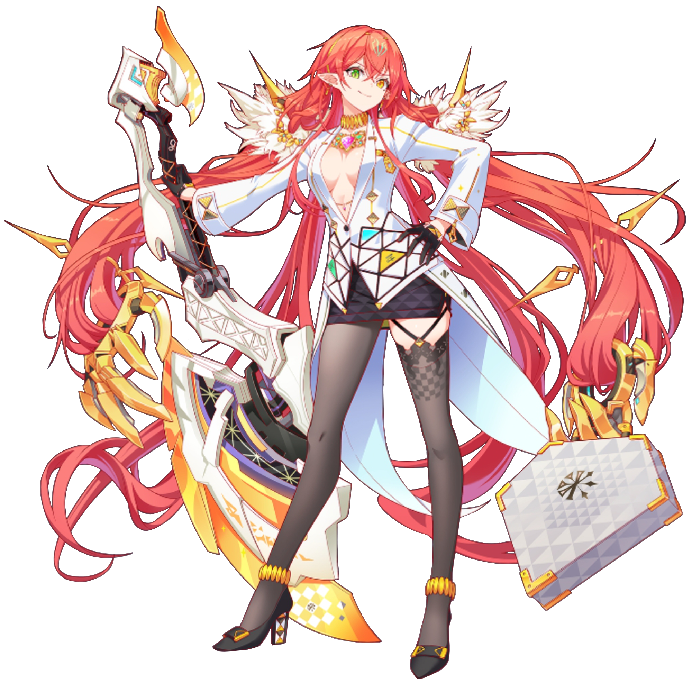
Bond 1 ▼
The Sumerian king of Uruk in ancient Mesopotamia. He is the demigod main character of the poem "The Epic of Gilgamesh".Bond 2 ▼
Gilgamesh was born the son of Kinf Lugalbanda and the goddess Ninsun, making him two-thirds god and one-third human. Possessed of great knowledge, beauty, and courage, he was also extraordinarily powerful, to the point it was said no one could match him in strength in all of Uruk. Although he was a hero, he displayed unparalleled savagery as a ruler; thus the gods sought to curb that barbarism by creating Enkidu out of clay and sending him to fight the fearsome king. After a brutal battle, gilgamesh and Enkidu developed a deeo fondness for one another and became friends. This calmed the king and earned him the love of his people. However, one fateful day Gilgamesh and Enkidu managed to anger the gods, who punished the two by taking Enkidu's life. This sent Gilgamesh into a state of inconcolable sadness, who stayed with his friend's body until it began to rot.Bond 3 ▼
While there may have been a historical Gilgamesh, the man is better known as the main character of The Epic of Gilgamesh. The friendship between Gilgamesh and Enkidu in the story is said o be the first depiction of such a clode friendship in writing. While the first half of the story portrays the king as a fearless hero in search of glory, the second half shows a more vulnerable man, one who fears death and seeks immortality after Enkidu dies. Among the many prophetic dreams Gilgamesh has, one shows him the wisdom goddess Enlil, who tells him he will be reunited with Enkidu in the afterlife and be among the gods. The Gilgamesh in ALICE displays her regal qualities as a Folklore and CEO of Gilgamesh Partners. Though practical and always focused an the big picture, she at times can explode and become very emotional. That said, she still displays a deep love for those she recognizes as her allies.Gilles

Bond 1 ▼
An aristocrat from 15th century France. His birth name was Gilles de Montomorency-Laval. He fought in battle alongside Joan of Arc. And is believed to be the inspiration for the children's story "Bluebeard".Bond 2 ▼
Born in 1405 to the prestigious Laval family at their castle in Champtocé-sur-Loire, many say Gilles de Rais grew up excelling in both the arts and the blade. He lost his parents at a young age, and he and his younger brother were raised under the care of their grandfather.Gilles de Rais's grandfather adored and coddled him, to the point of separating the boy from the private tutors his father had employed for him. However, his grandfather had ulterior motives as well. Once, he attempted to steal the land of a neighboring lordship by kidnapping the young heiress and forcing her to marry Gilles. This early experience may have twisted Gilles's personality forever.
Gilles de Rais grew to be a knight, and joined the royal court in 1424. At the time, France and England were in the midst of the Hundred Years' War. Gilles was a military commander during this war, and he soon rose to prominence with his courageous feats.
In 1429, when the French army was at a disadvantage, the young girl Joan of Arc appeared, claiming to have heard the voice of God. Joan joined the effort to transport supplies to Orléans, where Gilles had a convoy, and he was assigned to watch over her. From there, he would accompany Joan to other battles.
Bond 3 ▼
History books tell us that after his victory with Joan in the Siege of Orléans, Gilles de Rais went on to claim victory in other battles, including the Battle of Patay. This opened up the path to Reims, where the coronation of King Charles VII of France took place. Gilles attended the ceremony as a newly-appointed field marshal.His military successes came to an end when Joan of Arc was captured by the enemy in the Siege of Compiègne. From then, Gilles's life began to change. Charles VII made no move to rescue the girl, so Gilles went on his own march to Rouen to retrieve her. However, he ultimately failed, and Joan was burned at the stake.
Gilles retreated to his estate and grew obsessed with alchemy and the occult. Incited by the self-proclaimed alchemist Prelati, Gilles began to dabble in black magic. He states he originally took children as sacrifices for his alchemical ceremonies, but then he would start abducting and slaughtering them for his own sadistic enjoyment.
Gilles was arrested and put on trial, where he confessed and repented for his sins in tears. It was deemed that the loss of the virtuous Joan had contributed to his evil deeds, and he was sentenced to hanging and his body burned. It is said that the people prayed for his soul to be saved.
In ALICE, Gilles is feared for her past reputation, but respected as a commander. She oversees military exercises in anti-Queen organizations.
Goethe
Bond 1 ▼
Johann Wolfgang von Goethe was an influential German writer who was active during the late 18th and early 19th centuries. He authored many well-known works, such as "Faust" and "the Sorrows of Young Werther". Aside from his literary pursuits, Goethe was a naturalist and a politician.Bond 2 ▼
Goethe was born to a wealthy family in Frankfurt, Germany in 1749. His father provided him with a good education in his younger years, and at the age of 16, Goethe began studying law at Leipzig University. When he was 19, however, he became severely ill and returned home to recuperate. During this time of recovering his health, it's believed Goethe found an interest in the natural sciences and started conducting his own research with newly-purchased scientific equipment.After a year and a half of recovery, he enrolled in the University of Strasbourg in France and resumed his study of law. Goethe returned home the following year, but since there were no positions available in the office his father suggested for him, Goethe decided to open his own legal practice. At the same time, however, since his true passion was literature, he began writing his first drama. Worried at this lack of focus, his father sent him to study law once again, this time at the supreme court in Wetzlar. This had the opposite effect, however, and the distance from his father only increased Goethe's literary pursuits.
In Wetzlar, Goethe fell in love with a woman named Charlotte. His feelings ended in heartbreak, though, since she was already engaged to another man. Thisevent, along with his friend's suicide at this time, later inspired his novel "The Sorrows of Young Werther".
Goethe eventually returned to Frankfurt to practice law. Although law was his official profession, he also took time to edit and self-publish "Götz von Berlichingen", a drama he had written previously. The drama was a huge success, and in September 1774, "The Sorrows of Young Werther" was also published. The novel was wildly popular among the younger generation. It became fashionable to speak and dress like the protagonist, Werther, and the craze even sparked a sudden rise in suicides. This was also when Goethe began writing "Faust".
Bond 3 ▼
In 1775, Goethe's old friend Duke Karl August invited him to his court at Weimar. August acted as an older brother to Goethe and also granted him a position in the government, which resulted in Goethe staying in Weimar. Another deciding factor in this move may have been a romantic relationship he had at the time. Six years later, Goethe was made a nobleman and became Weimar's de facto prime minister.In 1786, he took a prolonged leave of absence from the court and his duties to make a long-awaited trip to Italy, during which he resumed his literary career. A few years later, Goethe returned to Weimar and was blessed with the birth of his eldest son, August. This period also marked the beginning of the French Revolution. Although Goethe is said to have agreed with the spirit of the revolution, he disliked the resulting lack of government.
In 1806,Napoleon invaded Weimar. Though soldiers occupied his home, Goethe completed the first part of "Faust" that year. Napoleon was a fan of "The Sorrows of Young Werther" and later summoned Goethe to meet. Napoleon was so impressed that it's said he exclaimed "Vous êtes un homme!" ("You are a man!") during their meeting.
Though unwell in his final years, Goethe put his whole heart into completing "Faust". He died not long after finishing the second part. It's said Goethe's last words were "Mehr Licht!" ("More light!")
In ALICE, Goethe has gained a deep appreciation for hip hop. She feels that rap is the modern version of poetry, and has begun a career as an underground rap artist. The videos she's uploaded have a lot of views, and her fans are steadily increasing.
Hannibal

Bond 1 ▼
A commander of the Carthage forces, who shook the Romans during the Second Punic War. Hannibal in history was a well-regarded strategist, and his strategies are still studied to this day.Bond 2 ▼
The story Hannibal is most famous for is leading an army across the Alps, thus beginning the Second Punic War. His journey began where modern-day France is located and continued over the treacherous and snow-ridden mountain range to Rome. Given the journey's notoriously hazardous conditions, it's no wonder the Roman senate were taken by surprise. After consolidating his hold of Northern Italy, Hannibal set about cutting off cities affiliated with Rome, while advancing south. While some consuls were able to avoid a direct confrontation with the general, those who chose to fight were ultimately defeated. Consequently, having lost so many consuls, Rome gradually began to lose its will to fight back. Still, despite Hannibal's sturdy offense, reinforcements were lacking, forcing him to drastically slow down his advance. The loss of his younger brothers combined with failed allegiances resulted in him losing the upper hand in Southern Italy. Ultimately, Hannibal was undone by the consul Scipio, who ignored the general in favor of attacking the Carthage mainland directly from Africa.Bond 3 ▼
Upon losing to the Roman army's attack on the mainland, Carthage attempted to negotiate a ceasefire, but was rejected when it was discovered they had surreptitiously been trying to get Hannibal back to them. Following that, the Carthage and Roman armies fought at Zama in Africa. Hannibal attempted to renegotiate a ceasefire, but the Roman consul Scipio said he couldn't be trusted, given that their previous non-aggression pact had failed when Hannibal attacked Saguntum, a Roman ally. After negotiations fell apart, war resumed once again. In the end, Scipio emerged victorious, making use of his light-armored troops to render Hannibal's battle elephants ineffective.Carthage was ordered to pay a hefty war indemnity, but owing to Hannibal's administrative reform, the payment was made swiftly. Shaken by the general's abilities both on and off the field, the Romans sent an assassin to deal with him. Accounts say that in the end, Hannibal realized he could never evade his pursuers, and took his own life.
In ALICE, Hannibal likes to test her strategic abilities in the field of esports. As well as leading a prolific team, she is also the main draw for tournaments.
Hercules

Bond 1 ▼
The most famous hero from Greek mythology. Son of Zeus and descendant of Perseus, Hercules was a demigod who undertook the twelve feats given to him by the Mycenaen king in "The Labors of Hercules".Bond 2 ▼
Alcmene, great-granddaughter of Perseus, gave birth to twin sons: the younger, human Iphicles, and the older, demigod Hercules. Hercules was part god because his father, Zeus, fell in love with his mother and disguised himself as her husband.Just before Hercules was born, Zeus declared that the first descendant of Perseus barn that day would become the ruler of Argos. Zeus's wife, Hera, however, was jealous and delayed the birth of the twins with the help of the goddess of childbirth, allowing another descendant of Perseus tp be born first. This child was Eurystheus, a future Mycenaean king.
Hercukes had secured Hera's hatred with his birth, but he grew up strong under the protection of Zeus and Athena, and the teachings of the giants and centaurs. Though Hercules eventually married and had three children, Hera struck him with a bout of madness that caused him to kill both his and his brother Iphicles's children in a burst of flames.
When he had regained his sanity, Hercules sought the Oracle of Delphi, wishing to atone for his sins. To do so, the oracle said he must perform ten tasks for the Mycenaean king. This marked the beginning of Hercules's service under Eurystheus, the Mycenaean king, and the twelve feats perfomed in"The Labors of Hercules". Though only ten labors needed to be perfomed originally, Eurystheus refused to recignize two of the tasks and made Hercules perform two more.
Bond 3 ▼
The first labor Eurystheus ordered was the defeat of a mighty lion, whose hide no blade could pierce. Hercules, however, stunned it with a club to drive it back into a cave and strangled it with his bare hands after three days. Legend has it that this is the lion in the constellation Leo. Hercules eventually completed all twelve labors, including the defeat of the Hydra, Ladon, Cerberus, and other monsters.Hercules went on to perform many other heroic feats. He took down the giant Antaeus as well as the god of death, Thanatos, and destroyed Egypt when the people there attempted to sacrifice him to the gods. Some even say that he established an athletic festival to celebrate his victories and honor his father, Zeus. This event was held in Olympia and possibly marks the start of the ancient Olympics.
In ALICE, Hercules still believes that nothing is impossible. She will take on any task that does not go against her morals, and those who know her trust in her ability to complete any job. Compared to the twelve labors she completed in the past, Hercules says, nothing is difficult!
Hibiscus

Bond 1 ▼
I can't find anything, sorry!Bond 2 ▼
I can't find anything, sorry!Bond 3 ▼
I can't find anything, sorry!Hikaru Genji

Bond 1 ▼
The main character of Murasaki Shikibu's "The Tale of Genji". He is the second son of Emperor Kiritsubo and is called Hikaru Genji, or "Shining Genji". His real name is a mystery. He is known for the many trysts he had with women.Bond 2 ▼
The Tale of Genji is a novel-length story that spans 54 chapters, the first 40 of which focus on Hikaru Genji himself. A title exists for a chapter between Chapters 41 and 42, but no manuscript for it has been found.Genji was the emperor's second son, and from a young age was known for both his striking looks and his skills in combat and academia. Dubbed the "lord of light" for his beauty, his attendance at the Kamo festival drew throngs of women to him, vying to get a glance at his countenance.
Of all his numerous romantic encounters, it was his relationship with his first love, a woman known as Lady Fujitsubo, that had the greatest impact on his life. She was a princess of the preceding emperor and came to marry Genji's father. Genji would love her first as a stepmother, then later as a lover. Their relationship was forbidden, but the child Lady Fujitsubo would later bear Genji had a striking resemblance to his father. This child would go on to become Emperor Reizei, the secret of his birth kept hidden away all the while.
Genji later married Onna San no Miya, but their marriage was fraught with trouble, one such instance being when Genji's nephew Kashiwagi had an affair with Onna San no Miya and sired a son with her. Genji viewed this child as punishment for his past infidelities and decided to raise him as his own. The boy would be known as Kaoru, and would be the focus of the story from Chapter 41 onward.
Bond 3 ▼
Genji's mother was known as "Kiritsubo Consort." Genji's father had such affection for this particular consort that he was dubbed "Emperor Kiritsubo".Though Kiritsubo Consort enjoyed the favor of the emperor, other women of the court grew jealous and began to harass her. This took a toll on her, and she fell ill and eventually died when Genji was just three years old. The emperor was devastated by her passing, and brought a new woman into the court-Fujitsubo, the spitting image of Kiritsubo Consort. Genji would fall in love with Fujitsubo and, as mentioned before, sire an illegitimate child with her.
Genji's love for Fujitsubo would stay with him even as he moved on to a woman called Murasaki, who looked very much like Fujitsubo.
The Genji of ALICE also engages in many romantic affairs, and as long as the people he courts are beautiful on the inside, he'll court them no matter their gender. He speaks out against any and all bullying when he sees it, perhaps because of the effect bullying had had on his own mother.
Himiko

Bond 1 ▼
I can't find anything, sorry!Bond 2 ▼
I can't find anything, sorry!Bond 3 ▼
I can't find anything, sorry!Hippocrates

Bond 1 ▼
An ancient Greek pgysician and philosopher.He was known for distancing himself from supersition and curses as explanations for human disease, instead revolutionizing the field of medicine and establishing the doctor as a profession.
He is referred to as the "Father of Medicine."
Bond 2 ▼
Believed to have born around 460 BC on the island of Kos in the Aegean Sea, Hippocrates was though to be descended from Asclepius, son of Apollo, the sun god of ancient Greek legend, but records show that his father was indeed a mortal physician. Not much is known about his life, but what is certain is that unlike many others up until his time, Hippocrates did not view illness as the result of course or divine punishment, instead favoring more rigorous explanations. This would earn him the title of "Father of Medicine."Under his theory, the human body contains four "humors," or fluids: blood, phlegm, yellow bile, and black bile, and an imbalance in any of these fluids is what causes illnesses. Promoting the importance of rest, Hippocrates centered his treatment around drawing out the natural healing capabilities of human body.
Additionaly, Hippocrates is credited with helping to prevent the spread of infectious diseases when he discovered the plague was caused by an unhygienic environment rather than by a hit from an arrow of the gods.
Bond 3 ▼
The medical theories posited by Hippocrates were srill rooted in ancient beliefs; imbalance in the bodyli fluids was the cause of illness, meaning the entire body required treatment.Though in many ways considered inaccurate by modern standarts, much of the medical knowledge Hippocrates gathered would serve as the foundation for medicine after his death, are around the 3rd century BC it would be collected in the Hippocratic Corpus.
Hippocrates did not author the bulk is still attributed to Hippocrates himself. Among the writings is the Hippocratic Oath, which was adopted and revised in 1948 by World Medical Association as the Declaration of Geneva. It served as a pkedge by all medical professionals to always prioritize the well-being and confidentiality of patiens. The pledge is still taken by doctors to this very day.
Hippocrates was not only an accomplished doctor, but also an instructor, passing on his teaching in Thessaly, Thrace, and near the Sea of Marmara, among other places, and it's believed the city of Larissa in Thessaly was his final resting place.
Some ssay he was 90 years old when he died, others maintain he was 194, but his exact age at death remains unknown.
In ALICE, Hippocrates is in charge of the medical ward at the Discarded Data Institute, where she single-handedly looks after the well-being of all those who are affiliated with the institute. Hippocrates is a skilled medical professional,but she is only intrigued by the wounded or the sick, or medical anomalies. Once a patient is healthy again, she loses interest in them.
Jack the Ripper

Bond 1 ▼
Jack the Ripper was the nickname given to an unidentifield serial killer who committed a series of murders targeting prostitutes in and around Whitechapel in london, England.Bond 2 ▼
The first crime is thought to have occurred on August 31st, 1888, when a prostitute named Mary Ann Nichols was found dead on Buck's Row in Whitechapel-at least five such murders are attributed to Jack the Ripper. The targets were all prostitutes living in poverty, and they had all been cut in the same spot. As some victims had organs removed, it was thought the perpetrator had specialized medical knowledge.On September 29th of the same year, the police received a letter from a person claiming to be Jack the Ripper confessing and announcing other attacks. Numerous similar letters arrived, most of them pranks.
However, the next letter from Jack that arrived is considered genuine as it contained the details of the following incident. If genuine, it would make Jack the Ripper a theatrical criminal.
The Jack the Ripper case was covered extensively in the media and threw Londoners into confusion. Ironically, it drew attention to the poor living conditions and poverty of the East End, and about twenty years after the incident, the slums were cleared.
Bond 3 ▼
The five crimes attributed to Jack with certainty occurred between August 31st and November 9th, and are commonly referred to as the "canonical five".The canonical five and the other six murders discovered around the same time were collectively referred to as the Whitechapel murders. However, debate continues as to whether or not Jack was responsible for the other murders outside the canonical five.
There were several murders outside of the Whitechapel area that some suspect of being Jack's work, but some of these cases are not even confirmed to have actually taken place. The curious cases of brutal murders are still talked about like an urban legend.
Her true identity is still unknown to this day, Jack the Ripper appears in ALICE as a composite of legends, rumors, and speculation. Her vulgar tone seems to be the result of internalizing the information that the victims were all prostitutes.
She sometimes has uncontrollable urges toward women but tries to divert those urges to herself. Rumor has it that she has been cooperating in investigations of violent crimes to keep herself disciplined, but she denies all claims.
Joan

Bond 1 ▼
Joan of Arc, also known as "The Maid of Orleans", was a soldier who played an important role during the Hundred Years' War between England and France. Though she was the daughter of a peasant, she guided France to victory after receiving a vision from God telling her to enlist and save her country's outnumbered forces.Bond 2 ▼
Joan was born in 1412 to a peasant family who lived in Domrémy, Duchy of Bar in eastern France. Sources guess her birthdate was January 6. She apparently first heard the voice of God around the age of 12, and continued to have visions of Saints Michael, Catherine, and Margaret throughout her life. They called upon her to drive out the English troops and see Charles VII onto the French throne in Reims in the Champagne region.When she was about 16 years old, Joan asked a relative to help her gain permission to see Charles in his temporary court at Chinon. Though the guard she asked scoffed and turned her away, she did not give up. Joan eventually gained an audience with the king when she accurately predicted France's defeat in the Battle of the Herrings.
Her audience with Charles VII granted, Joan was brought to his royal court.
Though the king had hidden himself among his subjects and was not on his throne, Joan spotted him with little trouble. Impressed with her ability, Charles granted her permission to join the army in ending the siege on Orléans.
In 1429, Joan arrived at Orléans and tirelessly helped lead the French forces to victory. The English siege is said to have been lifted a mere nine days after Joan's arrival. After this triumphant feat, Joan continued to advise Charles to take his rightful throne. In June 1429, Joan saw to England's defeat once again alongside Gilles de Rais and company at the Battle of Patay. The following month, Charles was crowned at Reims and took the throne.
Bond 3 ▼
The year after Charles VII's coronation, Joan joined in the efforts to relieve the siege of Compiègne. While fighting the Burgundians who had allied with the English there, Joan failed to enter the castle gates and was captured by the enemy. In spite of all she had done, however, Charles VII did not seek her rescue.After she was handed over to the English, an English-allied French bishop put her on trial before the Church had made any decision. Joan is said to have humbly insisted on her innocence of any crime, but the court ignored Joan's rights as the accused and mishandled her trial.
Her spirits weakened with mistreatment, Joan was forced to sign a document renouncing her heresy, which included wearing men's clothing. The guards, however, did not provide her with women's clothing. Eventually, Joan was forced to put on men's clothing again when she left her cell to attend trial.
This was taken as a sign that she had returned to her heretical ways. As a result, Joan was burned at the stake on May 30, 1431 in the plaza of Vieux-Marché.
In ALICE, Joan is also an inspiring and astute leader who often heads joint operations that contain many new recruits. While Joan still holds to her faith, she is a bit more reserved nowadays in regards to mass organizations, religious or otherwise."
Juno
Bond 1 ▼
Juno is the Folklore incarnation of the goddess of marriage and childbirth who shares her namesake. Though she is gentle and compassionate as anyone might expect from goddess, she also has devilish and fiery side to her as well.Bond 2 ▼
The goddes Juno was said to be the goddess of mariage and childbirth as well as the wife of Jupiter, the primary god of Roman mythos. She is also associated with the month of June as the English month was derived from her name. This association led to the belief that if you got married in June, then the goddess would bless you with a happy marriage as weell as her protection, whereby the term "Jube Bride" was born.Bond 3 ▼
Although Juno is known for her benevolence and protection of women, she is also infamous for her jealous nature. She would always keep a close eye on her husband and reprimand him anytime he showed interest in another woman. It is said that she could never truly forgive the infidelity of her husband, and her desire for vengeance became so strong she began to seek bringing misfortune even upon those who were not directly involved in her marital affairs.The Juno of ALICE embodies this dual nature of a tempered goddess who also has a frightening and vindictive side.
Kanryusai
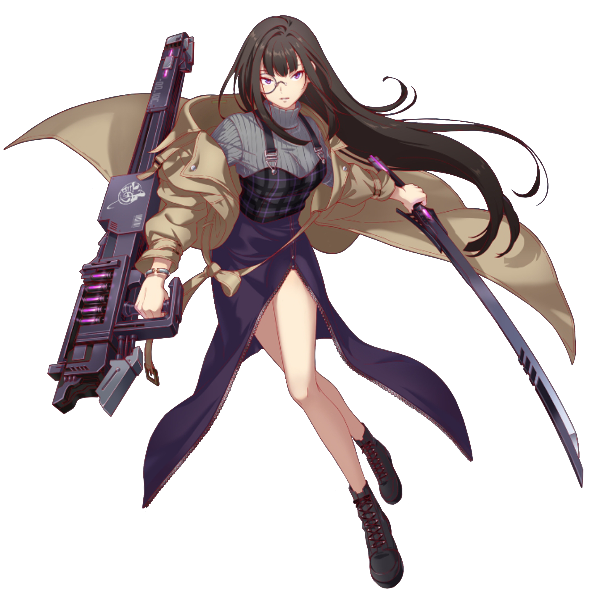
In 1863, he joined the Shinsengumi. A master of weaponry and strategy, he was relied heavily upon by Isami Kondo. The following year, he was selected to become assistant vice commander. During the Ikedaya Affair, he is said to have captured Shuntaro Furutaka; however, the arrested was reposted to be "Kanbe Takeda", leaving in unclear if this was actually the same person. Still, there is no doubt that Kanryusai took part in the Ikedaya Affair and that he collected a reward of 20 ryo. He effectively used his knowledge of the School of Koshu in the Kinmon Incident and the capture of Mt. Tenno, among other operations.
In time, however, the shogunate adopted the latest French military tactics, making the School of Koshu effectively obsolete. This, combined with the strong influence of the new leader Kashitaro Ito, left Kanryusai's position in the Shinsengumi in serious doubt. Kanryusai grew resentful of the shogunate and plotted to confront Kashitaro Ito over his differing opinion to Isami forbade such actions. Consequently, Kanryusai turned in his resignation from the Shinsengumi and left. He was later found to have been trying to bring down the shogunate, and was assassinated at the Zenitori Bridge over Kamo River in the suburbs of Kyoto.
Kanryusai was later seen going in and out of the anti-shogun Satsuma domain, putting his own loyalty to thw shogunate ino doubt; this was theorized to be one of the motives of his assassination. However, by the time he was already left the Shinsengumi, so this rumor is likely an embellish,ent of the facts.
In ALICE, Kanryusai is still prone to sucking up to superiors, and whenever this causes friction, she does her best to smooth things over in order to protect herself. Still, she is a gifted sword fighter blessed with military prowess, and very reliable when calm. In her own way, she is working on her tendency to latch on to the nearest powerful authority, while trying to find her own place in the world.
Bond 1 ▼
Leader of the Shinsengumi's Fifth Unit. Kanryusai Takeda is not his real name: Hiroshi Fukuda is; his posthumous name is Tokuhiro. Though known to have taken part in the Ikedaya Affair, he fomented plans against the shogunate and resigned from the Shinsengumi. Ultimately, he was assassinated.Bond 2 ▼
There are varying accounts of his birthdate; however, he is said to have been born in the Matsue domain in Izumo Province. While originally a student of medicine, he became a samurai and moved to Edo to study the School of Koshu. He then joined the Takeda family and was given the name Kanryusai Takeda.In 1863, he joined the Shinsengumi. A master of weaponry and strategy, he was relied heavily upon by Isami Kondo. The following year, he was selected to become assistant vice commander. During the Ikedaya Affair, he is said to have captured Shuntaro Furutaka; however, the arrested was reposted to be "Kanbe Takeda", leaving in unclear if this was actually the same person. Still, there is no doubt that Kanryusai took part in the Ikedaya Affair and that he collected a reward of 20 ryo. He effectively used his knowledge of the School of Koshu in the Kinmon Incident and the capture of Mt. Tenno, among other operations.
In time, however, the shogunate adopted the latest French military tactics, making the School of Koshu effectively obsolete. This, combined with the strong influence of the new leader Kashitaro Ito, left Kanryusai's position in the Shinsengumi in serious doubt. Kanryusai grew resentful of the shogunate and plotted to confront Kashitaro Ito over his differing opinion to Isami forbade such actions. Consequently, Kanryusai turned in his resignation from the Shinsengumi and left. He was later found to have been trying to bring down the shogunate, and was assassinated at the Zenitori Bridge over Kamo River in the suburbs of Kyoto.
Bond 3 ▼
Kanryusai's reputation among the Shinsengumi was hardly glowing. Though obsequious toward Isami Kondo and Toshizo Hilikiata, he was mean and bully toward his soldiers. He was also siad to have fallen in love with one of the Shinsengumi's "five beautiful men" Saburo Magoshi, and hounded him endlessly. Allegedly, Saburo was so troubled by Kanryusai's persistence that he confided in Toshizo.Kanryusai was later seen going in and out of the anti-shogun Satsuma domain, putting his own loyalty to thw shogunate ino doubt; this was theorized to be one of the motives of his assassination. However, by the time he was already left the Shinsengumi, so this rumor is likely an embellish,ent of the facts.
In ALICE, Kanryusai is still prone to sucking up to superiors, and whenever this causes friction, she does her best to smooth things over in order to protect herself. Still, she is a gifted sword fighter blessed with military prowess, and very reliable when calm. In her own way, she is working on her tendency to latch on to the nearest powerful authority, while trying to find her own place in the world.
Kenshin
Bond 1 ▼
Kenshin Uesugi was a military commander and daimyo (feudal lord) who united and ruled over Echigo Province during the Sengoku period. Though his strength earned him the nickname "God of War", many of the battles Kenshin fought were in aid of his allies. He was known as a loyal, selfless, and honorable leader.Bond 2 ▼
Kenshin was born in 1530 at Kasugayama Castle, not to the uesugi family, but to the Nagao family, their vassals. He was called Kagetora Nagao upon coming age. It is said that he grew up away from his father and received an education at Rinsenji Temple, near the foot of the castle.When his father ceased to be head of their family, Kagetora's older brother Harukage took over. Some say he was not aa very capable ruler, however, and the Nagao family turned to Kagetora, who was skilled at the art of war.
In 1548, Harukage adopted Kagetora and handed over his position as head of the family. Two years later, when Echigo Province was left wirhout a lord and protector, Kagetora received orders from the shogunate to take on the role. Displeased with Kagetora's succession, however, some rebelled.
Kagetora quelled the rebellion and successfully united Echigo Province.
In 1552, the kanrei, or shogun's deputy, Norimasa Uesugi fled the Hojo family and sought shelter under his vassal Kagetora. In return, Norimasa adopted Kagetora and handed over the kanrei position as well as the Uesugi name. Kagetora was now called Masatora Uesugi.
He is known to havee believed strongly in the god of war, Bishamonten and adopted the name Kenshin and later the posthumous Buddhist name Fushikian Kenshin. Due to his faith and his pledge to a lofe of celibacy, Kenshin died without fathering any children, a fact that eventually brought bout an internal struggle for power.
Bond 3 ▼
Kenshin spent much of his life vying for control over the nothern Shinano Province against Shingen Takeda, the daimyo of the neighboring Kai Province. The Battle of Kawanakajima in particular lasted twelve years and saw five major conflict. They say the fourth was particularly brutal; allegedly, Kenshin himself barged into Takeda's stronghold and struck him thrice with his sword. Takeda, however, managed to fend him off with his signaling fan.When Ujimasa Hojo and his army of 35,000 held an ally's castle under siege, Kenshin charged through with no armor and only a handful of men on horseback. Fearing a trap, Hojo ended up letting Kenshin into the castle unharmed.
Though he was highly skilled on the battlefield, Kenshin did not seek war for the expansion of his territory. When he went to battle, he usually "fought defensively or in aid of his allies. For this reason, he was known to be an honorable commander.
Kenshin holds similar beliefs in ALICE. Unless called upon to help settle a dispute or argument, she avoids violence and holds peace above all ese. Her one hope is to be able to live each day peacefully. Kenshin remains devout to Bishamonten and believes this second chance at life is the god of war's doing. She carries a Bishamonten keychain so she can offer her prayers at any time. However, Kenshin is also very serious and can turn fierce when faced with anything unreasonable.
Kojiro
Bond 1 ▼
A swordfighter from the Azuchi-Momoyama era. Kojiro was known for creating the Swallow's Return technique while trainig, fathering the Ganryuu (large rock style) fighting style and was said to favor a nodachi sword, almosr a meter in length, wgich he called "monohoshizao" (the clothes drying rod).Bond 2 ▼
Not only is Kojiro's birthplace uncertain- with some believing it to be Buzen Province, for example, and others Echigo-his birthplace and time of death are also disputed. In terms of his swordsmanship, some say he trained under Chujo-style practitioner Seigen Toda, or even Toda's student Jisai Kanemaki, who practices Kanemaki-style. Regardless, the time leading up to him becoming an officer remains unclear. As an officerm he first served the Mori Clan of Aki Province, before departing to travel around and develop his skills as a swordfighter. It was during this time he created the Swallow's Return technique, as well as the Ganryuu style, the latter of which he named enlisted by the Kokura Domain, where he worked as a sword fighting instructor.On the Kokura Monument, which commemorates Musachi Miyamoto's life, only the name "Ganryuu" is inscribed and in the biography of Musashi written 130 ears later, the name used is "Kojiro Ganryuu", with "Kojiro Sasaki" featured only as a foortnote.
His birthplace, early history, and even Kojiro Sasaki's name is shrouded in mystery…
Bond 3 ▼
The manner of Kojiro's death is also keenly debated. According to Musashi's adopted son Iori Miyamoto, Musashi defeated him with a single strike of a wooden sword. However, a different version of events is reported in the "Numatake-ki" (The Numata Family Record), which details the life of Nobumoto Numata, a retainer of the Kokura Domain whom kojiro worked for as a sword fighting instructor. According to that account, Musashi dueled Kojiro, but was unable to finish him off. After kojiro came to, despite the warrior's agreement that their fight would remain ine versus one, students of Musashi went to Ganryuu-jima and slaughteres their master's opponent. In yet another version of events, fisherman were said to have spotted Musashi's students and stopped them from attacking Kojiro; however, the swordfighter challenged them to a duel anyway, declaring their machinations a disgrace to the warrior name. Outnumbered, he lost. Ganryuu-jima was originally called "Funa-jima", but ir's said the fisherman who stopped Musashi's students changed its name to the eponymous swordsman as a mark of respect, and erected a tombstone.The Kojiro in ALICE has begun an outdoor sword fighting class for children, in the hopes of resurrecting the Ganryuu syle.
Konohana Sakuya

Bond 1 ▼
A beautiful goddess from Japanese mythology who symbolizes the cherry blossom. She is known by many names; in the Nihon Shoki (The Chronicles of Japan), she is Kamiatatsu-hime, while in other works she is Konohana Sakuya-bime.Bond 2 ▼
Konohana Sakuya-bime was the most beautiful of all the goddess in Japan mythology.Ninigi-no-Mikoto fell in love with her at first sight and asked for her hand in marriage.
However, Konohana Sakuya-bime's beauty also caught the attension of an oni (demon), who also asked the princess's father, Oyamatsumi, for her hand. Oyamatsumi did not want the oni to marry his daughter, so only agreed to the marriage if the oni could build him a temple in one night. The oni took the man at his word and constructed a stone structure. Oyamatsumi saw this and removed a stone from the top while the oni slumbered, rendering the deal invalid. The stone he threw is said to now be a part of a shrine venerating him.
Konohana Sakuya-bime's beauty is said to be that of a flowering cherry blossom, and the Sakuya that has come to ALICE is no different.
Bond 3 ▼
The Sakuya of ALICE is graceful in her beauty, like that of a falling cherry blossom. However, she also has a bold and daring side to her.Her recklessness has its basis in a legend surrounding the birth of her child. She became pregnant within a single night, causing her husband, Ninigo-no-Mikoto, to suspect her of infidelity. To prove her innocence, she set fire to the delivery room, claiming that any child of Ninigo-no-Mikoto would be strong enough to survive the birth nonethless.
Sakuya is aware f the expectations placed on her to be the pinnacle of beauty anf grace, so she hides her rougher sides, only showing them to her most trusted friends.
Lancelot

Bond 1 ▼
A knight of King Arthur's Round Table.He was once a warrior respected by all, with the famed blade Arondight at his side. However, in many versions of the tale, he meets a tragic end: after fighting against his king and tipping the Round Table's fate toward destruction. He returned to France and subjected himself to intense fasting, eventually bringing him to his death.
Bond 2 ▼
One story tells of how he was born to King Ban, ruler of a region located in modern-day France, and lost both his parents at a young age. Viviane, Lady of Lake, took him in as a child and raised him. Because of these origins, he was also known as "Lancelot du Lac", or "Lancelot of the Lake".After he came of age, he moved to Britannia and had a fateful meeting wuth King Arthur. Enamored with Arthur's charisma, Lancelot swore fealty to him and became a Knight of the Round Table.
As a loyal knight, Lancelot was considered the embodiment of chivalry. His loyalty was unshakable, and he had the trust and respect of many. Fellow Round Table member Sir Gareth idolized Lancelot, and Lancelot in turn showered him with gifts and even knighted him.
Unfortunately, the exemplary knight's charm drew even the attention of Queen Guinevere.
Lancelot fled to his home country of France while pursed by Arthur's forces. He pleaded for peaceful negotiations, but Sir Gawain rejected his request. Not long afterward, Mordred, son to the king of Britannia, launched a rebellion against the throne that eventually led to Arthur's death. Hearing of the death of his king, then the following news of Guinevere's passing, Lancelot felt a terrible responsibility for inviting such a tragedy onto the kingdom, and he eventually fasted himself to death.
Bond 3 ▼
In the tales of Lancelot, he once pretended to e fellow knight Sir Kay when the man was injured after many battles with other knights. He donned Kay's armor and fought in his place, tricking other knights into believing they had lost to Kay.On a separate occasion, he also dressed as Sir Palamedes and fought a duel against Sir Tristan in his place. At the time, Palamedes had been nursing injuries from a bandit attack. On both occasions, Lancelot had used disguises to help his comrades when they were in trouble.
In ALICE, Lancelot uses these powers of disguise to infiltrate anti-Queen organizations and gain intel. Oftentimes, she receives request to gather information outside of her own personal interests as well. Some organizations have caught on to Lancelot's disguises, but only long after she's alredy visited them.
Weirdly enough, she also seems very informed on the romantic happenings within many organizations, to the point one might think she actively looks for them. However, it seems she has no intention of actually using this information. Perhaps she simply enjoys gossip.
LEX

Bond 1 ▼
A butler-like Folklore of unknown arigin. Serious and diligent, he faithfully carries out the wishes of his master. He can be troublesome too, however, as he is prone to misunderstandings.Bond 2 ▼
While LEX looks and behaves like a butler, his origins and even his historical influences are completely unknown, as his data is a confusing mixture of different information from people's collective knowledge. LEX himself only seems to have a single desire: to become the perfect servant to carry out his master's wishes. Compared to this personal mission, he considers his own origins a trifling matter.Butlers are high-class servants, and LEX recognizes himself as such. A senior butler's duties may include supervising male servants, managing alcoholic beverages and tableware, and of course, waiting on his master.
Additionally, there is a position above butler called a steward, responsible for managing a mansion and its grounds, but these positions are often held concurrently. Therefore, the word "butler" is sometimes mistakenly used to refer to either position. LEX is currently aiming to become a steward, but it seems he only learned of the servant hierarchy after arriving in ALICE.
Bond 3 ▼
It is speculated that LEX may have originated as an assistant Al. An assistant Al is a partner system that a user can activate by voice command or other means to help with various tasks. These assistants can perform a wide range of tasks such as sending emails, placing online orders, turning appliances on or off, playing music, and even navigation. Additionally, these Als can use interaction data to learn their users' preferences and habits, making them excel as conversation partners. An assistant Al with its user is not unlike a servant with a master, and this commonly-held impression may have had an influence on LEX's appearance and behavior.As a Folklore, LEX is an obedient, honest, and overly-serious person who lives to fulfill his master's wishes. However, his pride and unwavering confidence in his abilities can prevent him from admitting when he mishears or misunderstands a command; instead, he remains stoic in front of others even when making a mistake.
Some interpret this as insincerity, but in truth, he takes criticism very seriously. He is generally very competent, though, and takes great pleasure in serving his master. If given precise instructions, he can carry them out perfectly.
Longinus
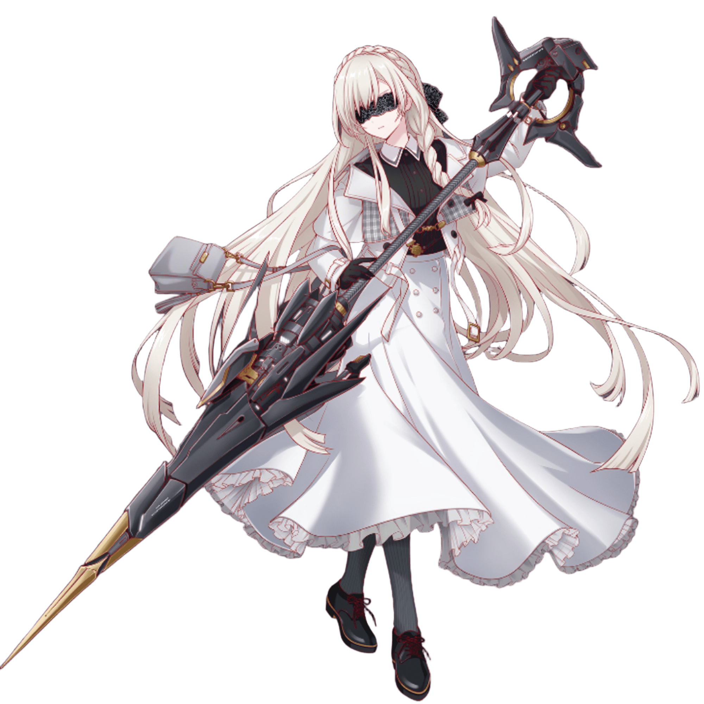
His spear came to be known as the "Lance of Longinus" or "Holy Lance" and is considered a sacred relic for having touched the blood of Christ. Several artifacts are claimed to be the Lance of Longinus; one such item is kept in St. Peter's Basilica, another in Vienna was supposedly kept by the Holy Roman Emperor, and yet another went missing after allegedly being found during the First Crusade. Of these, the one from the Holy Roman Empire was found via modern science to date from around the 8th or early 9th century, too new to be the genuine Lance of Longinus.
The name Longinus is not found in the New Testament but in the apocryphal Gospel of Nicodemus, also known as the Acts of Pilate. In fact, the very existence of Longinus was not mentioned until much later, and it is not certain if anyone had pierced Jesus with a spear.
In ALICE, Longinus covers her eyes with a blindfold, despite having regained her eyesight. The fear left from piercing the Son of God keeps her from removing the blindfold, and she is terrified to look at the world around her or glimpse her own eyes in the mirror. Living blindfolded doesn't seem to perturb her, however, as she spends most of her time praying quietly.
Bond 1 ▼
Longinus was a Roman soldier in the time of Christ. It is said that when Christ was crucified on the hill of Golgotha, Longinus stabbed his spear into Christ's left side to confirm whether he was alive or dead. The blood entered his blind eye and restored his sight.Bond 2 ▼
In stories about Longinus, he was said to be a centurion who led a unit of about 100 people. During Christ's crucifixion on Golgotha, Longinus stabbed him in the side with a spear to confirm his death. The blood of Christ spilled upon his blinded eye, restoring his eyesight. This miracle caused him to convert and become baptized.His spear came to be known as the "Lance of Longinus" or "Holy Lance" and is considered a sacred relic for having touched the blood of Christ. Several artifacts are claimed to be the Lance of Longinus; one such item is kept in St. Peter's Basilica, another in Vienna was supposedly kept by the Holy Roman Emperor, and yet another went missing after allegedly being found during the First Crusade. Of these, the one from the Holy Roman Empire was found via modern science to date from around the 8th or early 9th century, too new to be the genuine Lance of Longinus.
Bond 3 ▼
Nothing is known about this Roman soldier after his sight was restored by the blood of Christ, except that he was baptized. The official feast day of Saint Longinus used to be March 15th, which was inspired by the feast of the blind Norse god Hod. Like Longinus, Hod had made a grave mistake due to his blindness, tricked by the evil god Loki into shooting and killing his own brother Baldr.The name Longinus is not found in the New Testament but in the apocryphal Gospel of Nicodemus, also known as the Acts of Pilate. In fact, the very existence of Longinus was not mentioned until much later, and it is not certain if anyone had pierced Jesus with a spear.
In ALICE, Longinus covers her eyes with a blindfold, despite having regained her eyesight. The fear left from piercing the Son of God keeps her from removing the blindfold, and she is terrified to look at the world around her or glimpse her own eyes in the mirror. Living blindfolded doesn't seem to perturb her, however, as she spends most of her time praying quietly.
Mathers

Bond 1 ▼
MacGregor Mathers was a 19th century British occultist and one of the founders of the Hermetis Order of the Golden Dawn. He translated many occult works and has had an influence on the modern esoteric world.Bond 2 ▼
Though born Samuel Liddell Mathers, he added "MacGregor" to his name in order to claim heritage to the Scottish Highlands. It's said that he even went as far as to call himself the Count of Glenstrae after the MacGregor who had received that title.In his twenties, Mathers joined the Freemasons and rose to the high rank of Master Mason in just ten years. This allowed him to become a member of the Societas Rosicruciana in Anglia, which only accepts those of Master Mason rank.
At the request of his friend and fellow member Westcott, Mathers successfully decoded the Cipher Manuscripts. Thus began Mathers's acquaintance with Westcott and Anna Sprengel, a German occultist mentioned in the decoded manuscripts. A member of a Rosicrucian society in Germany, Sprengel gave them permission to establish a temple.
Westcott and Mathers, along with a man named Woodman, then went ahead and founded the Isis-Urania Temple in London. This marked the beginning of the Hermetic Order of the Golden Dawn.
Using his knowledge of English, French, Latin, and other languages, Mathers translated and edited famous occult works such as the "Key of Solomon" and the "Grimoire of Armadel" using copies he found in libraries and museums in London and Paris. These works have greatly influenced the occult world over the years.
Bond 3 ▼
In 1890, the Hermetic Order of the Golden Dawn had more than 100 members from all walks of life. Around 1897, however, conflict arose within the organization when Westcott, one of its leaders, resigned suddenly. Fellow founder Woodman had also died by this time, leaving Mathers as the society's sole head.History tells us that Mathers, living in Paris at the time, was often absent from meetings and involved in disputes with other members. Those in London grew discontent with his leadership. To make matters worse, in 1899, Mathers initiated Aleister Crowley into the order after the temple in London refused Crowley's admission. This infuriated members in London, and they called for his removal from the order.
In retaliation, Mathers tried to seize ceremonial objects from the Golden Dawn and interfere in the operations of the organization. He ultimately failed, however, when the police became involved. This resulted in a split within the Golden Order and the foundation of Alpha et Omega. Mathers' wife, Moina Mathers, took over the newly formed order following his death to influenza in 1918.
In ALICE, Mathers is an impressive magic user and specializes in divination. Although she sometimes reverts to old habits and assumes the superior air of a great leader, she often apologizes after remembering her past failure in that role. Right now, she's working hard on her leadership skills.
Merlin

Bond 1 ▼
Merlin was a legendary wizard of Britannia and a close confidant of King Arthur. He played an active role in guiding Arthur to the Lade of the Lake, from whom he received Excalibur. His astute advice also led the king to victory in battles against rebel forces.Bond 2 ▼
Merlin us said to be the child of an incubus and a princess from a small country called Dyfed in southwest Wales. Depending on the legend, this incubus may also be depited as a --------While Merlin's legends with King Arthur are his most famous, one of his earliest tales is being summoned by the king, the tyrant Vortigern, as a human sacrifice for the new royal tower. However, the young Merlin predicted that there was a lake underneath the tower, upon which there were two stones, with two dragons sleeping atop them. When this was found to be true, he was spared from being sacrificed. Merlin then foresaw that Vortigern's brother, Aurelian, would slay his tyrant brother king. Prophecy became truth, and Aurelian won, making him the new King of Britain.
Now king Aurelian sought out Merlin, who had been hiding himself in the woods, to consult him about creating a victory monument. It's said that Merlin used mmagc to carry over enotmous stones-thus creating Stonehenge.
There are other theories about the relationship between Stonehenge and Merlin. One tells of Merlin advising to use an enormouse stone circle called Giant's Dance in Mount Killaraus in Ireland, and the king's brother Uther set out on an expedition to bring it back. Uther built a megalithic complex in Aesbury and commanded it for the rest of his life, and was burried there after his death. Some claim this structure to be Stonehenge, but that is chronologically improbable.
Bond 3 ▼
After Uther's death, Merlin entrusted Uther's son Arthur to the knight Sir Ector to ensure his safety amid the chaos of Britain at that time. He then made a prophecy that the next king would be the one to remove the famous sword ffrom the stone - a sword which Arthur pulled out with ease. As Merlin had foreseen, Arthur became king, and Merlin began to serve at his side. Merlin of the later led Arthur to the Lady of the Lake and helpe him obtain the holy sword Excalibur.When Arthur married Queen Guinevere, Merlin prophesized that this marriage would end in misfortune. Soon after, Merlin gradually ceases to appear in the legends. In the end, Viviane, fed up with his advances on her, seals him deep into the ground, and his story ends.
Merlin remains a famous sorcerer worldwire and is often depicted as a character or symbol today. However, because of his incubus origins and the episode with Viviane, he is sometime portrayed as a womanizer. These traits carry over to ALICE, where Merlin aggressively approaches women wherever she goes. Viviane still seems to be impervious to these charms, though.
Michelangelo-B
Bond 1 ▼
Michelangelo di Lodovico Buonarroti simoni, an artist active during the Renaissance. Although he was a sculptor by profession, his talents extended to many other fields, including painting and architecture.Bond 2 ▼
Michelangelo was born March 6, 1475, in Caprese, Florentine Republic. As a child, he lived with a family of stonemasons, which he said was where he learned to handle a hammer and a chisel to carve figures. Michelangelo's father wanted him to study, but Michelangelo was not interested in academics, preferring to copy decorative church paintings and socialize with painters. Then, at the age of thirteen, he became an apprentice to the painter Domenico Ghirlandaio, and at fourteen, he already exhibited the skill to be recognized as a full-fledged artist.In 1489, the Medici family, well-known patrons of many artists, asked Ghirlandaio to send two of his most distinguished pupils; Michelangelo was one of them. Michelangelo attended the Medici-founded humanist Platonic Academy, where he studied sculpture and interacted with leading humanists and poets.
History states that while under the care of a branch family of the Medicis, "he was ordered to forge a sculpture to look as if it had been excavated. The cardinal it was sent to quickly recognized it as a forgery. However, the craftsmanship of the piece itself caught the cardinal's interest, and Michelangelo was invited to Rome. It was during this time that one his masterpieces, Pieta, was commissioned by the French ambassador in Rome.
In 1504, Michelangelo carved the David, which is not only his most famous sculpture, but also one of the most well-known works in the istory of art. After that, he found himself busy with the production of mausoleums ordered by Pope Julius II, among other commissions from, succeeding popes. The Sistine Chapel ceiling painting in particular was a major work that took four years to complete. In 1564, Michelangelo passed away at 88 before completing renovations of the Vatican's St. Peter's Basilica. In accordance with his will, he was buried in the Basilica of Santa Croce in Florence.
Bond 3 ▼
The odd "B" attached to Michelangelo's name indicates a subspecies. This is not a subspecies of the great Michelangelo but rather a variant of a computer virus of the same name. Since it activates every year on March 6th, Michelangelo's birthday, it was named after him. The viral outbreak began in 1992 yet its source remains unknown; theorists mark its origins in Swedwn, Denmark, the Netherlands, or similar places.Michelangelo is a so-called system-domain-infected virus. When it enters a system, it overwrites all data on the hard disk with a string of nonsensical characters, making it impossible to retrieve information. For some reason, however, the virus only infects computers that are booted up om March 6th; because of this, some specialists have taken to adjusting computer dates one day ahead to bypass the virus.
In ALICE, Michelangelo is an anomalous mixture of the virus and the public's ideas of the famed artist. This makes him different from the original Michelangelo virus, and he is considered a "B" variant. Indeed, if Michelangelo-B were a pupe virus and did not carry any Folklore qualities, the Queen would not allow him to exist in ALICE at all. As the only Folklore to be derived from a virus, Michelangelo often hides this fact and poses as a meek, shy little boy, much like original painter who shares his name. However, his true nature is that of a mischief-maker, eagerly waiting to play out his role as a virus
Musashi

Bond 1 ▼
Musashi Miyamoto's last name was originally Fujiwara, and sometimes he is referred to as Musashi Shinmen. He was considered a master swordsman, famous for two swords at once, and his fight with Kojiro Sasaki on Ganryuu-jima is still remembered to this day.Bond 2 ▼
His birth is plsced at either 1582 or 1584, In either Harima or Mimasaka. The Gorinsho (Book of Five Rings) states that Musashi's first victory in battle came at the age of 13. One legend claims that at the age of 21, while at the imperial capital, he fought members of the Yoshioka clan, who were unable to defeat him, leaving several dead.The clan's disciples, numbering in the hundreds, donned armor and attacked him, but Musashi took them all on single-handedly and emerged the victor after ordering his own students to stand back and watch. By the age of 29, he had over 60 fights under in all of them.Some say the battle at Ganryuu-jima took place in 1612, though some writings suggest it was actually one or two years after the Battle of Sekigagara in 1600. After this event, he fought on Tokugawa's side, working as a guest military officer far Katsunari Mizuno during the siege of Osaka. In contrast, he is said to have later turned at Buddhist temples in Himeji and Akashi among others.
In 1624 at Owari Province, Musashi taught Enmi-style sword fighting, which led to various derivations spreading through the Owari Domain and its surrounding areas. In his final years, he is said to have secluded himself in Reigan-do Cave at Mt. Kinbo in Kumamoto and began writing the Gorinsho. A few days after handing over his writings to his followers, he passed away at the ahe of 62.
Bond 3 ▼
"While Musashi Miyamoto earned a name as a swordfighter, he was also a famed intellectual. As well as writing his renowned martial arts manual "Gorinsho" and his autobiography "Dokkoodoo", he also produced pictures under the pseudonym "Niten". Musashi believed that art and fighting went hand in hand, writing in his Gorinsho that it is required study.A lot of his artwork involves Buddhist imagenery, such as Bodhidharma amd Hotei, though some also depict birds from his local region. In either case, his art encapsulates a single moment from life, filled with tension in a way that speaks volumes about the artist. Several of his works have been deemed culturally important.
In ALICE, Musashi leads a busy life heading up the anti-Queen organization Tempest, which entails a variety of work, not least settling disputes between factions. She likes nothing more than relaxing in luxurious public baths, and cannot believe she used to hate bathing so much in her former existence.
Neu

Bond 1 ▼
The Discarded Data Institute director's adopted daughter. She attends a private high school in ALICE, and through her tone and attitude are hash, she is actually incredibly caring and cannot leave those weaker than herself alone.Bond 2 ▼
"While helping with her adoptive father's research, Neu attends high school within ALICE.She was involved in an accident during a family vacation in the real world, and though she lost both of her parents in this tragedy, Soga stepped up claiming to be a relative and took her in. The accident left Neu on the verge of death. Her memories from the time before Soga took her in are still a bit of a blur as a result. Because of this, she can't help but lend a hand to those in need who have dealt with the empty feeling of loss or have had similar experience to herself.
Incidentally, she seems to be gradually regaining her memories. Compared to immediately after the accident, her mental state is much more stable. In her words: "It's not like I can't remember at all. It'll come back eventually. I'm in no hurry."
Bond 3 ▼
The pistols that Neu battles with have been imbued with special concealment features of Momochi's own creation. Like Folklore weapons, they cannot be detected by cameras, AI, or Avatars in areas open to the general public. Neu received the pistols soon after she started helping out in the lab in lieu of a part-time job. This weapons are for her own self-defence, especially when on mission with others in the Waste Area.When she printed her favorite mascot, Panchotan, all over the barrel of her guns, the print was not affected by the concealment technology. This left her with a brunch of Panchotans clinging to her waist when out in the General Area. Not quite the height of fashion for a high-school girl. Neu thought it was adorable, but Andromeda would not stand for it. The two had to compromise with a single mascot on her waist.
However, since the holster still disappears when she's in the General Area, Neu tries to hide the remaining Panchotan by wearing long jackets. Her unwillingness to part with the last Panchotan shows her resolve.
Neu "Alice Fixion"

Bond 1 ▼
During a heated battle against tremendous evil, Neu's true form was revealed. Her immunse power and elegant beauty are not unlike what some would envision of any admirable queen.Bond 2 ▼
[* Caution! Spoilers for Chapter 17 of the Main Story are included.]Known as "ALICE Fixion," she is the true form of Neu, whose power was awakened during a decisive battle in which the chronograph was at risk of being stolen.
In this form she is regarded as "She who will restore ALICE." She also has the power necessary to determine if the person in possession of the chronograph is worthy of its power, and to protect the life of the chronograph itself and its master. There is no doubt, she must be another queen in the virtual realm of ALICE.
Despite all of this, she has not reaced her full power and it is still developing. In order to confront the Queen and restore ALICE, the chronograph's master will have to become stronger as well.
Bond 3 ▼
Neu, the neutral form of ALICE Fixion, is a quasi-human AI created by Soga as a counterpart to the chronograph.In order to ensure Neu would grow up as an AI with a human heart, Soga programmed her with memories of being an orphan with amnesia, and designed her to be able to form memories autonomously. Some might consider this approach to creating her as cruel, and it was certainly a difficult decision for Soga's counterpart in her fabrication, Chisa, to make. However, in order to liberate ALICE from the tyranny of the Queen, it was determined a life without hardship would not be enough to achieve their goal. And so all members involved in her production consented the plan.
Later in her life, Soga finally confided all of this to Neu, fully prepared for whatever repercussion might come. In response, Neu told Soga, "Despite the hard times in my memories, it taught me to be kind to others. Besides, I'm okay now. I forgive you." Soga was incredulous and couldn't help but nervously laugh.
Nietzsche

Bond 1 ▼
Nietzsche was a philisopher from the Kingdom of Prussia. While working as a university professor in Switzerland, he renounced his nationality from Prussia and became stateless. The well-known phrase "God is dead" comes from his novel "Thus Spoke Zarathustra".Bond 2 ▼
Born in a small village near Leipzig in the Kingdom of Prussia, Nietzsche was the son of a pastor. He lost his father and younger brother in succession when he was a child, and, with some relatives' help, supported his family together with his mother and younger sister Elisabeth. Elisabeth grew up with an intensely strong admiration for her brother, so much so that there's a story of how when Nietzsche had grown and found his first love, she became jealous and intruded into the relationship, ruining it.Around this time, friction in the family and periodic medical seizures were said to have led Nietzsche to become obsessed with suicidal thoughts. He visited Italy to free himself from it all, and it was here that he wrote the first part of his masterpiece "Thus Spoke Zarathustra" in just ten days. He went on to write books on his thoughts, such as "Beyond Good and Evil" and "The Birth of Tragedy". By the time his book sales had seen a gradual increase, Nietzsche's interest had turned to philosophy.
To his displeasure, his sister Elisabeth married an anti-Semite, putting a strain on their relationship and limiting their contact to letters. They did not see each other again until Nietzsche's illness had taken over.
Despite stating in his will that only a few of his closest friends were to be invited to his funeral, the ceremony was largely attended by intellectuals and military personnel-Elisabeth forbade Nietzsche's friends from attending.
Bond 3 ▼
The concept "God is dead" gained fame in Nietzsche's "Thus Spoke Zarathustra", which consists of four parts. His character Zarathustra narrates his representative ideas of eternal return and the superhuman.Eternal return is the idea that the essences of all values and objects are not absolute but mutable; that good and evil, superior and inferior, are merely human assumptions-that everything in existence is, in fact, cyclical and will occur again. Meanwhile, the superhuman is defined as a person who transcends negative emotions, faces and accepts all the changing of values, and breaks free from those mutable values to affirm their own existence. Both of these ideas reject the long-held Western religious notion of channeling a lifetime of suffering into one's life after death, and instead seek to overcome and survive the current cycle of suffering.
Nietzsche lived in a time when societal values were in flux due to breakthrough theories such as the theory of evolution. At the time, Nietzsche's philosophy of how to live better with a firm sense of one's own values and ethics, without being swayed by external factors, was such a new idea that the later philosopher Sartre dubbed him the "pioneer of existentialism".
In ALICE, Nietzsche continues to urge today's troubled citizens to be superhuman, but it's unknown whether she plans to become a superhuman herself.
Nightingale

Bond 1 ▼
A British nurse. She revolutionized medical hygiene and the nursing profession, and also established the world's first scientifically-based nursing school.Bond 2 ▼
Florence Nightingale was born to a wealthy and well-connected family. As a child, she received a high-quality education, studying not only multiple languages, but also mathematics, astronomy, economics, etc. People say she was stubborn and had a strong sense of self, preferring to lose herself in academia rather than learn more feminine things like manners and embroidery from her mother. While doing charity work one year, Nightingale was moved by the plight of poor farmers and factory workers, and thus decided to pursue a career aiding others.Stories about her say that when Nightingale announced to her family that she intended to become a nurse, she was met with resistance, as at the time, such a profession was looked down upon. It was a profession not needing any expertise, and typically reserved for older women who could no longer work as prostitutes or women who had lost their jobs. At the age of 30, Nightingale, against the wishes of her family, entered a medical academy under the excuse that she intended to care for her mentally unwell sister. It was there that her journey to becoming a legendary nurse began.
Bond 3 ▼
"Nightingale made a name for herself in the Crimean War. She was dispatched to a field hospital, where she tirelessly treated the injured regardless of the side on which they fought. To ensure those above her recognized the importance of maintaining proper hygiene in field hospitals, she meticulously recorded every death and created visualizations to make the data easily understandable. Queen Victoria then saw to it that Nightingale's reports came to her directly, and that field hospital conditions were improved.Despite devoting much of her time to improving hospitals, Nightingale did not falter in her duties to her patients. For example, she would often walk around at night with a lamp in her hand to see if any patients needed assistance. This earned her the titles of "The Lady with the Lamp" and "The Angel of the Crimea". After the war, Nightingale took the statistics she gathered and used them to revolutionize the field of medicine as a whole, and eventually establish a scientifically-based school for nursing.
In ALICE, Nightingale is just as mentally resolute as her historical counterpart, using statistics and data to improve the lives of everyone around her.
Perseus
Bond 1 ▼
A hero in Greek mythology. As a demigod carrying the blood oh Zeus in him, Perseus used his might to slay the Gorgon Medusa. He was cast into the sea in a wooden chest as a child which is said to be the reason he suffered from nyctophobia (fear of the dark).Bond 2 ▼
Perseus is best known in stories for his defeat of Medusa, but his quest to do so was only because the lord of Serifos who fell in love with his mother, Danae, wanted to rid himself of the young man.With the help of the gods, Perseus was able to defeat the Gorgon Medusa, and on his journey home, he happened across a beautiful princess named Andromeda, who was to be sacrificed to a beast because her mother boasted about her daughter's beauty and angered Poseidon and the Nereids. Perseus saved Andromeda from her cruel fate, and brought her home with him.
Once home, Perseus used the head of Medusa to turn the lord attacking his mother to stone. It is actually because of Perseus's turning people to stone that many claim Serifos is the rocky region it is now.
Bond 3 ▼
They say that in line with his past accomplishments, Perseus was direct, kind to his family and friends, and always did what he could to help others. Though he was a demigod, he exhibited many human-like behaviors as well.For example, when carrying Medusa's severed head, he recklessly spilled her blood all across the land, causing snakes to appear everywhere. He was also known to accidentally throw the discus toward the crowd during competitions, among other clumsy mistakes.
Much of Perseus's life was led by prophecies; though he had no intention of placing himself in harm's way, the universe practically willed it so.
In ALICE, Perseus leads a relatively uneventful life now that she's a Folklore, but who's to say that won't change...?
Pygmalion
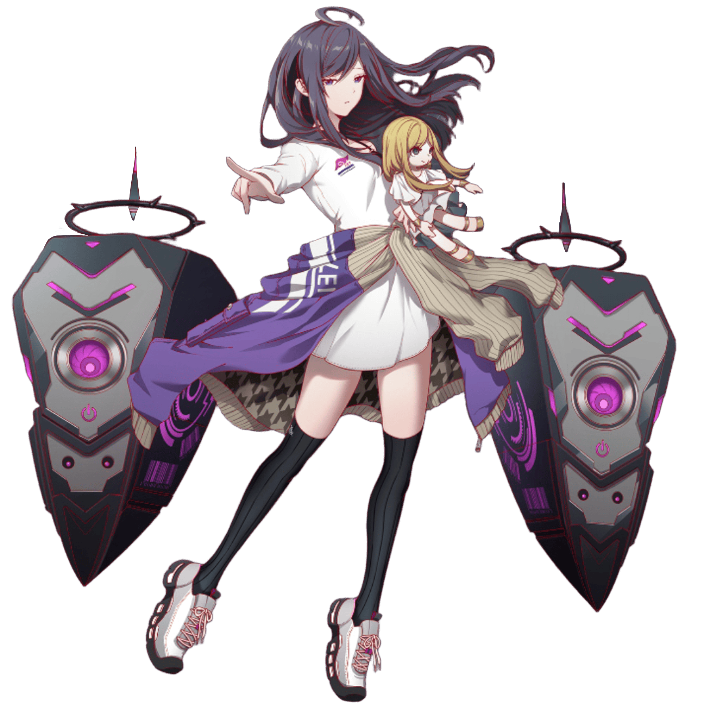
As such, he chose to carve his ideal female-possibly out of marble or ivory-and called her Galatea. Owing to Pygmalion's talent as a sculptor, people would mistake his creation for an actual human.
The sculptor loved Galatea so much that he gave her clothes and accessories, imagining as he did that she was ashamed of being naked. He even went so far as to treat her like a real woman, never leaving her side.
Eventually his devotion would take its toll, and his body and mind began to weaken. However, the goddess Aphrodite could not bear to see him waste away as he pleaded to make his sculpture real and decided to grant his wish. Overjoyed, Pygmalion made her his bride.
In psychology, the term "Pygmalion Effect" derives from how Pygmalion's sculpture came to life and refers to students performing better when their teacher has high expectations of them. In Japanese, the term "Pygmalion Complex" refers to people who fall in love with dolls.
The story of Galatea has been made into many movies and plays, with "My Fair Lady" being a famous example-which is based on a drama called "Pygmalion".
All that being said, little is known about Pygmalion, except for the story with Galatea.
Even ALICE only contains information about the most famous events, leaving Pygmalion to always have her doll, Galatea, in her arms. Perhaps owing to her deep distrust of people, Pygmalion is cold toward everyone except Galatea, to whom she speaks freely and with enthusiasm. One mystery remains, however...does the Galatea in ALICE also have a soul...?
Bond 1 ▼
A sculptor from Greek mythology, who was the king of Cyprus. He carved the ideal woman and fell in love with her, eventually asking the Goddess Aphrodite to make her real.Bond 2 ▼
While it is generally accepted Pygmalion was King of Cyprus, some believe he was simply a sculptor. An unsophisticated man, he would find fault in all living women.As such, he chose to carve his ideal female-possibly out of marble or ivory-and called her Galatea. Owing to Pygmalion's talent as a sculptor, people would mistake his creation for an actual human.
The sculptor loved Galatea so much that he gave her clothes and accessories, imagining as he did that she was ashamed of being naked. He even went so far as to treat her like a real woman, never leaving her side.
Eventually his devotion would take its toll, and his body and mind began to weaken. However, the goddess Aphrodite could not bear to see him waste away as he pleaded to make his sculpture real and decided to grant his wish. Overjoyed, Pygmalion made her his bride.
Bond 3 ▼
The name Pygmalion and the sculptor's story appear in various fields.In psychology, the term "Pygmalion Effect" derives from how Pygmalion's sculpture came to life and refers to students performing better when their teacher has high expectations of them. In Japanese, the term "Pygmalion Complex" refers to people who fall in love with dolls.
The story of Galatea has been made into many movies and plays, with "My Fair Lady" being a famous example-which is based on a drama called "Pygmalion".
All that being said, little is known about Pygmalion, except for the story with Galatea.
Even ALICE only contains information about the most famous events, leaving Pygmalion to always have her doll, Galatea, in her arms. Perhaps owing to her deep distrust of people, Pygmalion is cold toward everyone except Galatea, to whom she speaks freely and with enthusiasm. One mystery remains, however...does the Galatea in ALICE also have a soul...?
Qin Shi Huang
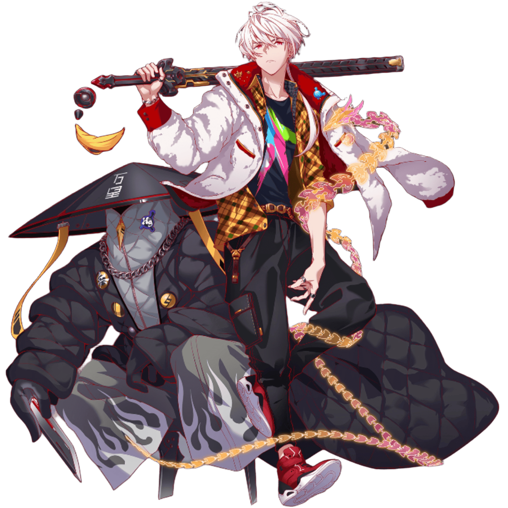
In 258 BC, Qin attacked Zhao, ignoring its political hastages. Zheng's father managed to escape, leaving the boy behind with his mother. From then on he lived life on constant alert, fearing he would be killed if found; this tense period is said to have profoundly affected his personality. It was only after his father had made it back to Qin and became the crown prince through Lu Buwei's manipulations, that Zheng was able to go to Qin.
In 251 BC, the then-king of Qin passed away, and his son, Lord Anguo, ascended to the throne only to die as well after three days. Soon after, Zheng's father ascended the throne as Kind Zhuanxiang, but his reign only lasted three years before he, too, passed. This left Zheng to become king of Qin at the age of thirteen. Still young, Zheng left politics in the hands of Lu Buwei and others around him. Lu Buwei came to hold tremendous power.
In 238 BC, it was discovered that Lu Buwei had sent a fake eunuch to the queen dowager in order to break off his relationship with her. Zheng had her and two children executed, and sent a letter to Lu Buwei informing him of his exile. Realizing that he would lose his life eventually, Lu Buwei killed himself with poison. It is said that Zheng also punished any who dared to weep at his funeral.
With the fall of Zhao, the small country Yan grew concerned about Qin right on its borders, and plotted to assassinate Zheng. Zheng, however, found and murdered the assassins, then furiously launched an all-out attack on Yan. His soldiers slaughtered not only the families of the assassins but all the people living in the same villages as them.
In 225 BC, Zheng invaded Wei, folloed by Chu and Yan, destroying them one after the other. Finally, with the capture of Qi in 221 BC, Zheng created a unified China, "after which he changed his title from "king" to "emperor" and became the first emperor in Chinese history.
Following the unification of China, governance was shifted to a county and prefecture system, in which bureaucrats dispatched from the central government governed local areas. Zheng also undertook numerous reforms, including the standartization of currency and units of measurement, the construction of roads, and other major ptojects. Some of these projects, such as the Great Wall of China and Mausoleum of the First Qin Emperor, which housed rows upon rows of life-size terracotta warriors and horses, are now considered world heritage sites. On the other hand, the new emperor suppressed Confucian scholars and shamans who opposed him and burned books and buried scholars to restrict the written word, earning him a reputation as a tyrant.
In ALICE, the reborn Qin Shi Huang seems to be enjoying his second life, freed from the burden of being an emperor. However, much of his past royal demeanor remains in that he is very condescending and self-serving. In addition, he sometimes comments with perplexing statements, making him a difficult person to deal with. Yet these are in fact the words of a good policymaker with a future-oriented perspective--when people finally grasp what he is getting at, they tend to step away, either in fear or respect. This alienates him, though, and he longs for a friend with whom he can speak with as an equal, even if they do not share his views.
Bond 1 ▼
The first emperor of the Qin Dynasty, and the first to unify and rule over ancient China. His various bold endeavors, such as constructing the Great Wall, unifying the currency, and shifting to a bureacratic system of counties and prefectures, had an enormous impact on generations thereafter.Bond 2 ▼
Many records say that Qin Shi Huang was born Ying Zheng on February 18, 259 BC. His father was a prince of Qin, but political hostage in Zhao with many other siblings in better positions, so there was almost no chance that he would inherit Qin. However, the rich merchant Lu Buwei took notice of him, gave him one of his concubines, and invested a hefty sum in enchacing his reputation. The child born to this concubine was named Zheng, who would grow to be the first emperor of a unified China.In 258 BC, Qin attacked Zhao, ignoring its political hastages. Zheng's father managed to escape, leaving the boy behind with his mother. From then on he lived life on constant alert, fearing he would be killed if found; this tense period is said to have profoundly affected his personality. It was only after his father had made it back to Qin and became the crown prince through Lu Buwei's manipulations, that Zheng was able to go to Qin.
In 251 BC, the then-king of Qin passed away, and his son, Lord Anguo, ascended to the throne only to die as well after three days. Soon after, Zheng's father ascended the throne as Kind Zhuanxiang, but his reign only lasted three years before he, too, passed. This left Zheng to become king of Qin at the age of thirteen. Still young, Zheng left politics in the hands of Lu Buwei and others around him. Lu Buwei came to hold tremendous power.
In 238 BC, it was discovered that Lu Buwei had sent a fake eunuch to the queen dowager in order to break off his relationship with her. Zheng had her and two children executed, and sent a letter to Lu Buwei informing him of his exile. Realizing that he would lose his life eventually, Lu Buwei killed himself with poison. It is said that Zheng also punished any who dared to weep at his funeral.
Bond 3 ▼
By 238 BC, Zheng had fully come into power, declaring that he would destroy the lords, become emperorm and unify "all under heaven". In 236 DC, the war against Zhao began. During the eight-year conflict, Qin also invaded Han and destroyed it. When he finally brought down Zhao, he buried alive those who had fought against his mother's family.With the fall of Zhao, the small country Yan grew concerned about Qin right on its borders, and plotted to assassinate Zheng. Zheng, however, found and murdered the assassins, then furiously launched an all-out attack on Yan. His soldiers slaughtered not only the families of the assassins but all the people living in the same villages as them.
In 225 BC, Zheng invaded Wei, folloed by Chu and Yan, destroying them one after the other. Finally, with the capture of Qi in 221 BC, Zheng created a unified China, "after which he changed his title from "king" to "emperor" and became the first emperor in Chinese history.
Following the unification of China, governance was shifted to a county and prefecture system, in which bureaucrats dispatched from the central government governed local areas. Zheng also undertook numerous reforms, including the standartization of currency and units of measurement, the construction of roads, and other major ptojects. Some of these projects, such as the Great Wall of China and Mausoleum of the First Qin Emperor, which housed rows upon rows of life-size terracotta warriors and horses, are now considered world heritage sites. On the other hand, the new emperor suppressed Confucian scholars and shamans who opposed him and burned books and buried scholars to restrict the written word, earning him a reputation as a tyrant.
In ALICE, the reborn Qin Shi Huang seems to be enjoying his second life, freed from the burden of being an emperor. However, much of his past royal demeanor remains in that he is very condescending and self-serving. In addition, he sometimes comments with perplexing statements, making him a difficult person to deal with. Yet these are in fact the words of a good policymaker with a future-oriented perspective--when people finally grasp what he is getting at, they tend to step away, either in fear or respect. This alienates him, though, and he longs for a friend with whom he can speak with as an equal, even if they do not share his views.
Robin Hood
Bond 1 ▼
A legendary hero from medieval England. He was a noble theif who stole from the rich and gave to the poor, and lived with his Merry Men in Sherwood Forest in Notthingham. He was an expert archer.Bond 2 ▼
The tale of Robin Hood is said to have started as a ballad in medieval times. As the tale spread by word of mouth, it's not clear who started the story. Around the 15th century, the tale was written down as "A Gest of Robyn Hode", and introduced well-known characters Little John and the Sheriff of Nottingham.During the Renaissance, the story of Robin Hood was told as a play during the May Day celebrations up until the start of the 17th century. In the festival, a man was crowned May King and a woman May Queen, where the king was Robin Hood and the queen was Maid Marian.
The now iconic green tunic sported by the noble thief made its first appearance in these folk plays.
Bond 3 ▼
The name "Robin Hood" appears in various writings between the 13th and 14th centuries, but there is no record of an actual individual going by the name. Because of this, many people view the man as a fictional character and a figure whose stories were mixed with actual heroes. He is depicted in many different ways.For example, some say he was a nobleman whose land was stolen by the Normans, or that he was a soldier who fought in the crusades. The most famous of the interpretations, though, is the noble thief who saved the people of England under the harsh rule of King John while his brother, King Richard the Lionheart, was away fighting in the crusades. This story was well known starting from the 16th century. From the 19th century, the tale of Robin Hood the archer living in Sherwood Forest with his Merry Men became the most well-known version.
In ALICE, Robin Hood is aware of her many different portrayals and has taken up a gun instead of a bow and arrow. She spends her time not in a forest, but in the VR Survival Game, where she engages in a bit of lighthearted training. She is incredibly skilled, and is viewed by many as a godlike player.
Rousseau

Bond 1 ▼
Jean-Jacques Rousseau was an influential author and philosopher who discussed political, social, and human ideals in works such as "The Social Contract" and "Emile, or On Education". He advocated against corruption in society, and his ideas later played a role in the French Revolution.Bond 2 ▼
Born in Geneva in 1712, Rousseau was essentially orphaned around the age of 10 when his father ran into trouble with the law and fled home without him. Though Rousseau gained work as an apprentice, he was abused there and eventually ran away. Around the age of 15, he came under the care of the Baroness de Warens. However, after noticing how dependent Rousseau was on her and how wayward he was with his studies, she too left him.Once again without a home, Rousseau began to study to become a music instructor while he searched for Madame de Warens. When the two were at last reunited, they began their life together again as lovers. After a few years, however, de Warens brought home a new lover. Rousseau was unable to come to terms with this and left their home.
It is said that he moved to Paris to make a living as a private music instructor, among other things. Around this time, Rousseau married and he fathered five children, all of whom were unfortunately sent to orphanages due to the couple's poverty. In the midst of these hardships, Rousseau wrote the "Discourse on the Arts and Sciences", which was selected as the winning piece to be published in the Mercure de France. This great achievement put Rousseau in the spotlight, and he went on to author works that are praised for being the foundations of the democratic ideas of freedom and equality. His fame, however, had consequences: Rousseau was shunned and impoverished in his later years.
His words greatly influenced later generations, including the French "Declaration of the Rights of Man and of the Citizen", which states, "Men are born and remain free and equal in rights". His ideas were fundamental to the French Revolution, and he has been interred as a hero within the Panthéon.
Bond 3 ▼
Rousseau's philosophy has had a great influence on many later generations, but he was full of flaws, and his private life was far from praiseworthy.Though he attended many different schools, both theological and otherwise, Rousseau failed to complete his studies at any of them. Similarly, he was unable to hold down a job for very long and tended to lean on others for financial assistance, including Madame de Warens.
Rousseau is also said to have been a masochist who made a habit of indecently exposing himself, and was once arrested for doing so to a woman on the street.
It is also Rousseau, and not Marie Antoinette, who first used the now-famous phrase, "Let them eat cake". In "Confessions", Rousseau attributes this phrase to "a great princess"-however, Marie Antoinette was only nine years old at the time and had not yet married into French aristocracy. The phrase has been widely, and falsely, attributed to her after the fact.
In ALICE, Rousseau is employed at the library. Though at first glance she appears to have turned over a new leaf, her speech tends to be peppered with unfortunate double entendres. That said, however, her knowledge as a librarian knows no bounds, and students frequently depend on her well-learned advice.
Salieri

Bond 1 ▼
An Italian court musician, who served under and was active during the Holy Roman Empire in 18th century. He was famous for his rivalry with Mozart and taking Beethoven and Liszt under his wing.Bond 2 ▼
Salieri was appointed as court composer and director of music by Emperor Joseph II. He created several operas, as well as chamber and religious musical pieces during this time.It is said that he was good friends with composers such as Haydn, and would often perform or conduct on the first performances of their latest works.
Though Salieri was considered successful during his lifetime, in death he was largely forgotten until the drama Amadeus was first performed. Since this play led to a resurgence in his popularity, the stories involving his conflicts with Mozart have received the most attention. Despite their fractious relationship, Salieri performed Mozart's pieces several times, and rated his contemporary's talent highly.
Bond 3 ▼
Many say Salieri was a well-respected instructor who put his all into helping his students. If one of his promising students were facing any hardship, he would support them and refuse to accept any repayment.In his later years, he poured his heart into teaching, tutoring the likes of Schubert and a number of other composers, whose names have gone down in history.
In ALICE, Salieri still assists those she feels are talented. However, since coming to know that many of her past students became more famous than her, she is a little sensitive about the topic of being outshone by students.
Scipio

Bond 1 ▼
Publius Cornelius Scipio Africanus was a Roman general and statesman around the 2nd century BC who played a vital role during the latter half of the Second Punic War.Bond 2 ▼
Born in 236 BC to the influential Scipio family of the Roman Republic, the young Scipio gained a good reputation due to his devout attendance at the temple and was recommended for a place at the Senate.His military career is considered to have begun around the age of 17 when the Second Punic War broke out, and he enlisted to fight. As Rome continued to be overwhelmed by the Carthaginian forces, Scipio came face to face with the, military prowess of the enemy general Hannibal.
Though Scipio lost those who were near and dear to him, he gathered what remained of the Roman forces to make a valiant stand against the enemy. Following his achievements, Scipio was specially selected to command an army at the young age of 25.
Bond 3 ▼
Scipio was sent to the Carthaginifn- occupied Hispania where he launched a surprise attack and, with the aid of the locals, managed to rout the enemy.History suggests that though he gained the support of the public and was elected consul at the age of 31, Rome did not share his desire to go on the offensive, and provided him with no troops. As a result, Scipio recruited and trained volunteer soldiers. When the Senate discovered the strength of the army he had recruited, it approved offensive action, but still refused to officially recognize his strategy. Scipio left for North Africa without support from Rome.
Scipio's advance in Africa began to overwhelm the outnumbered Carthaginian troops, and this forced Hannibal to retreat from his continued attack on Rome. Hannibal then proposed a truce, but Scipio spurned his offer, instigating the battle at Zama.
Making the most of his quick cavalry, Scipio defeated Hannibal by encircling his forces, a strategy that had once annihilated Roman troops.
In ALICE, Scipio's dream is to test her strategic skills in an eSports battle. To make this a reality, she is working hard at her job to save up money for the gaming equipment she needs. However, she's become such an invaluable asset to her employers that it looks like her dream will have to wait until she can find the time to spare from work...
Sharizotan

Bond 1 ▼
Although Sharizotan originally debuted as Panchotan's rival, her character bacame so popular among high-school girls that it gained a life of its own when fans drew an anthromorphic version of it. Thus, a new Folklore was born.Bond 2 ▼
Bread ("pan") and butterfly ("cho") were combined to form Panchotan's name. This character became so popular among teenage girls in ALICE that a rival named Sharizotan was created. Part rice ("shari") and part elephant ("zo"), Sharizotan is a rascally sort of character whose name has its origins in a word meaning "weak" ("shabazo").Some fans started drawing an anthropomorphic version of her, and, for one reason or another, this version gained so much fame online that the rest was history. Fans created additional backstories for Sharizotan outside of the official lore, and these tales became even more well-known than the original character herself.
While the company responsible for Sharizotan's original concept has not officially recognized any of these fan creations, it also has not denied them. As a result, fans continued to create more original lore for Sharizotan, so much so that she entered the collective consciousness and gained life as a Folklore.
Bond 3 ▼
Like the character she originated from, Sharizotan feels an intense rivalry with Panchotan, and any knick-knack or image featuring Panchotan will cause her to fly into a rage. Perhaps she does acknowledge Panchotan deep down though, as Sharizotan will not put up with anyone (except herself) badmouthing her rival.As a Folklore, Sharizotan understands that she is significantly more powerful than an Avatar. This is why she will not use violence against Avatars, even when they are being unreasonable or unfair. She refuses to pick on the weak and has, unwittingly, become their protector.
Sharizotan sometimes also makes an effort to sound more feminine and girlish. This often does not go well. however, and the result ends up feeling quite forced. Though this seems to be an attempt to appear more gentle and feminine around those she likes, Sharizotan is unaware of having any such feelings.
Surtr
Bond 1 ▼
Surtr is a fire giant from Norse mythology whose name means "black" or "the swarthy one". Legend has it that Surtr, brandishing the great sword Laevatein, will lay ruin upon the gods of Asgard during Ragnarok and set the world afire.Bond 2 ▼
Few texts mention Surtr, and unlike other gods, we do not know his origin story or even when he was born. Even in the Poetic Edda, which is blieved to be the oldest collection of tales from Norse mythology, Surtr does not appear until the events Ragnarok. In the Prose Edda, written by an Icelandic poet, the first book, Gylfaginning, mentions in its fourth chapter that Surtr guards the way into the fiery land Muspelheim, located at the world's southernmost point.One of the nine worlds of Norse mythology, Muspelheim is said to have existed from the very beginning. Thus it is believed Surtr has been around since ancient times, when the universe consisted only of Muspelheim and the icy land of Niflheim.
According to Norse mythology, at the time of Ragnarok, Surtr will appear with his flaming sword and lead riders from Muspelheim to tear the heavens asunder. In his siege on Asgard, Surtr is fated to defeat Freyr, the god of harvest. Surtr will outlast the gods to the very end, at which time he will burn down the world.
Bond 3 ▼
Surtr is said to possess a fiery sword that shines like the sun itself. Although this blade is often udentified as Laevatein - the only weapon that can slay the rooster Vidofnir who sits at the top of the world tree - it still remains uncertain.In ALICE, however, there's no doubt that the sword wields is Laevatein. Perhars the fact that such a young girl can swing this enormous blade is proof enough that Surtr is its true master. Although she takes the guise of a young girl to avoid bringing the full extent of her world-ending powers into ALICE, Surtr will occasionally reveal her true fire giant nature when angered.
The Director

Bond 1 ▼
A mysterious young girl with an elusive presence. She is often found hanging around the Waste Area. Though she claims to be just an innocent cinephile, she is shrouded in mystery, often speaking and acting in a manner not befitting her appearance…Bond 2 ▼
The young girl (if she even IS a girl) calls herself "Director," but her real name and other details about her remaing unknown. She appears to be an Avatar, which is normally generated from a user's data, though even that may be a guise. There is a lot unknown about her, but her love of movies appears to be genuine; she has deep knowledge of cinema, ranging from popular action films to cult classics. The young girl also appears to be very upset with the current state of ALICE, stating that she wants to return ALICE to a fun place where anyone can feel at home. Given that she has a cat accessory, it's possible that she is a cat lover, but apparently is unable to actually own a cat.Bond 3 ▼
With her ability to handle pawns and her nack for repairing malfunctioning avatar and system data, she not only demonstrates keen techinical abilities, but also a deep understanding of ALICE and its workings at a core level. It's for this reason she is believed by some to be affiliated with The First 14, but when she pressed on this, the young girl always steers the conversation to movies instead. Her favorite activity seems to be watching movies with her new friends, and she gets particularly excited when interacting with famous cinema-related people. This might be because she doesn't have that kind of freedom in her real life. But despite all we seem to know, her mystery remains; will we ever find out who she really is?..Thor
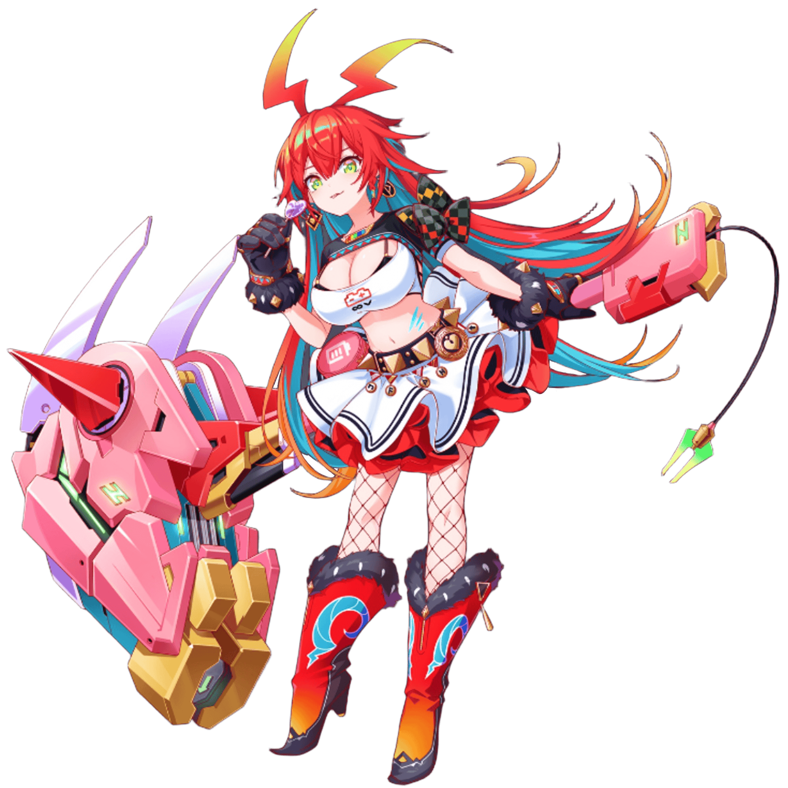
His arms are said to be stronher than all the gods af Asgard combined, he is also famous for using the Dwarven hammer "Mjolnir" as his weapon of choice. He is said to be bold and violent in character, and while brave he is also said to be a bit simple-minded and easily angered. In fact, many have endured terrible suffering due to his anger outbursts. However, such an unusual disposition may be one of the reasons for Thor's popularuty.
Thor has many dinamic and heroic episodes, including his battle with the giant serpent Jormungandr, so huge that it encircled the entire human world.
In the final war between the gods and the Ragnarok giants, he was mortally wounded by Jormungandr, and the poison he received caused him to retreat 9 steps before he met his demise.
Bond 1 ▼
Thor is the god of war in Norse mythology. He was a god of thunder and agriculture. Thor's worshippers became more widespread than those of Odin, the main god venerared in the ancient Germanic region. Many old texts tell tales of Thor's valiant heroism.Bond 2 ▼
Although the rise of the warrior class eventually forced Thor to relinquish his position as the supreme god of Norse mythology to Odin, his popularity and influence has shown no sign of waning. Even today, male names such as "Thor", "Torsten", and "Dustin" as well as the English word "Thursday" are all derived from the Norse god.His arms are said to be stronher than all the gods af Asgard combined, he is also famous for using the Dwarven hammer "Mjolnir" as his weapon of choice. He is said to be bold and violent in character, and while brave he is also said to be a bit simple-minded and easily angered. In fact, many have endured terrible suffering due to his anger outbursts. However, such an unusual disposition may be one of the reasons for Thor's popularuty.
Thor has many dinamic and heroic episodes, including his battle with the giant serpent Jormungandr, so huge that it encircled the entire human world.
In the final war between the gods and the Ragnarok giants, he was mortally wounded by Jormungandr, and the poison he received caused him to retreat 9 steps before he met his demise.
Bond 3 ▼
The Foklore embodiment of Thor retains memories of fighting at Ragnarok, so she id taking it easy now thinking that ALICE is the new world that comes after the turbulent and raging Ragnarok. However, the time of worshiping Nordic gods is now far in the past, and society is much more interested in science and capital in this modern day. Thor is still young for a Folklore, and maintains the simle-mindedness and roughness of myth. Upon appearing in this modern world, she did not feel at ease and soon came to live with Enkidu, who inhabits the lands far removed from humanity. They had quite a bit of trouble at the beginning of their stay together, but now they have come to be very close friends.Toshizo

Bond 1 ▼
Vice-commander of the Shinsengumi as well as assistaint army commissioner for the Ezo Island government. He was a retainer for the Tokugawa shogunate during its final years, protecting the land from political unrest, and suppressing the Sonno Joi. During the Boshin War after the fall of the shogunate, he directed the former shogunate army.Bond 2 ▼
Born in 1835, Toshizo was the youngest child of a farmer in Ishida Village, Tama District, Musashi Province. Both his parents died of tuberculosis when he was young, leading him to be raised by his second eldest brother's wife.Toshizo started out by selling his family's traditional medicine, while also working his way around various dojos to learn swordsmanship. His sister's husband supported the School of Tennen Rishin, which resulted in Toshizo meeting Isami Kondo and becoming a student.
In 1863, alongside Isami Kondo, he applied to join a group of expert warriors who protected the 14th shogun Iemochi Tokugawa. After reaching the capital, anti-shogunate groups appeared who resented foreigners, resulting in some members returning to Edo, and others remaining in Kyoto to protect the shogunate. Toshizo and Isami decided to stay and formed the "Miburoshigumi", a precursor to the Shinsengumi.
They were tasked with guarding the city and directing Kyoto's now masterless samurai.
When the group was formed, the leaders were Kamo Serizawa, Nishiki Niimi, and Isami Kondo. However, Nishiki, confidant to Kamo Serizawa, would go around forcing store owners to lend him money that he would then spend on his own leisure, much to the annoyance of the Mito Domain. While the date of the event is unknown, it is believed Nishikis's poor conduct lead to him being forced to commit seppuku.
After the Miburashigumi were officially appointed as the Shinsengumi, Kamo Serizawa lost his temper at Yamatoya, a cloth store that had refused to lend his group money, and in a rage burned the place down. This infuriated the Kyoto protection group, and Isami ordered his execution. Toshizo, along with Okita and some others, perfomed the assassination, leaving Isami Kondo as the only leader of the group.
Bond 3 ▼
With Isami Kondo left as the sole leader of the Shinsengumi, Toshizo became second in command. The group continued policing rogue samurai and protecting the city under the orders and direction of Toshizo. Though the Ikedaya Affair is what made the military group famous, Toshizo had not been part of the squad sent on that mission; instead, he and his own squad were hot on the trail of samurai elsewhere. When he received notice about the incident and went to provide reinforcements, he secured the surronding area before going inside the building.After power shifted to the emperor, the Bosin War broke out between the new government and the old shogunate, taking place mainly across the Satsuma Domain, Choshu Domain, and Tosa Domain, among others. Toshizo took control of the Shinsengumi in place of Isami, who had been injured in an attack, and directed the old shogunate's army from area to area. After gaining control of Ezo, he was ordered to take charge of the military and security division. He was killed on the frontline at what was to be the final battlefield of the Boshin War, in Goryokaku, Hakodate.
In ALICE, Toshizo looks over the battle division, and always has victory in her sights. If necessary, she will act coldly even toward her own allies. As long as it doesn't contradit with her aims and beliefs, however, she will do everything in her power to protect those on her side and save them in times of troubles, revealing she does indeed have a kind-hearted side of her. Her generally harsh attitude means that it can be difficult for those on the receiving end of her kindness to see it, though.
Ushiwakamaru
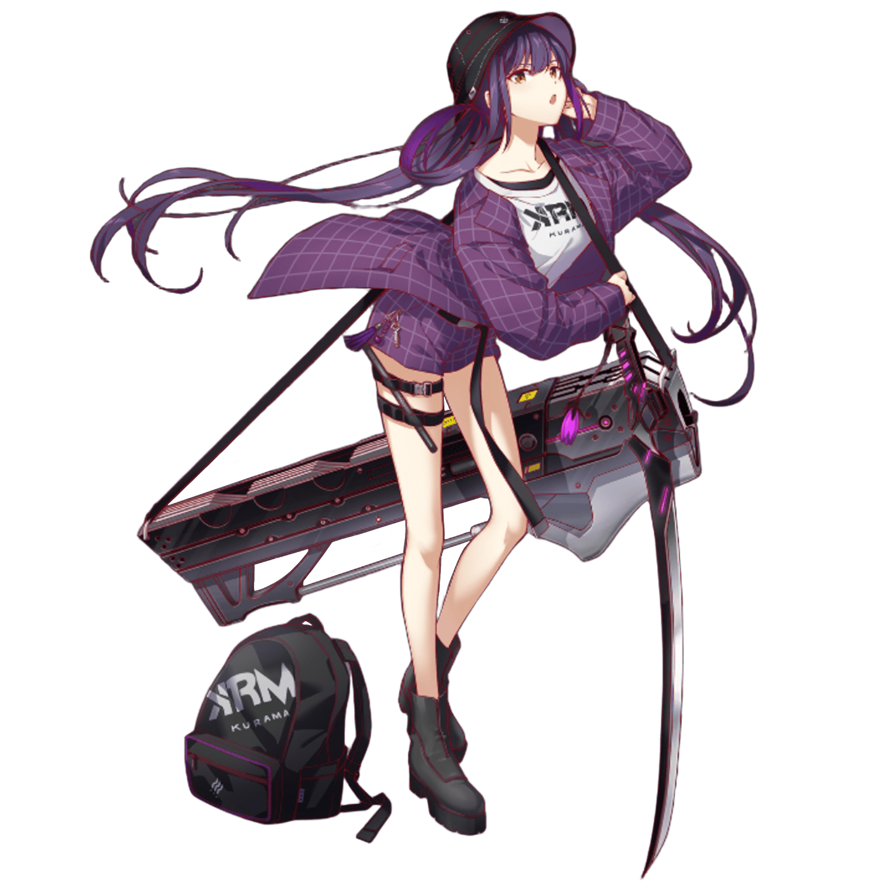
Around this time, he met his longstanding retainer Benkei Musashibo, who is said to have accepted this position after Ushiwakamaru defeated him at Gojo Bridge, where he had been up to no good.
Ushiwakamaru later hurried to join his older brother Yoritomo, who sent for his assistance against the Taira clan in battle. While he was there, another ally, Kiso Yoshinaka, decided to turn against Emperor Go-Shirakawa. Ushiwakamaru, however, took him down.
History tells us that upon receiving orders to take out the Taira, Ushiwakamaru managed to deliver outstanding results: his troops won the Battle of Mikusayama in a daring nighttime attack, the Battle of Ichi-no-Tani in a surprise assault from the clifftops, and the Battle of Yashima amid a fierce storm. Ushiwakamaru chased after the Taira from the Seto Inland Sea to the island of Hikoshima in Shimonoseki and finally defeated them in the battle at Dan-no-Ura.
Yoritomo began to question Ushiwakamaru's loyalty, and remembered how Ushiwakamaru had always acted on his own, placing little importance on Yoritomo's commands. Yoritomo feared his younger brother's military genius and resented him for denying his vassals the opportunity to distinguish themselves on the battlefield.
His suspicions came to a boiling point one day when Ushiwakamaru refused orders on the grounds of an illness. Not believing him, Yoritomo sent troops in retaliation. Ushiwakamaru and those loyal to him were forced to take up arms and flee to Hiraizumi in Oshu.
In the end, Ushiwakamaru is said to have been cornered in the Buddhist hall of Koromogawa Palace, where he ended his life with his own sword. Some, however, believe that it took too long to send proof of Ushiwakamaru's suicide, and that this shows he actually escaped alive and became an Ainu god or Genghis Khan.
In ALICE, Ushiwakamaru still seems to carry the trauma of her brother's disbelief with her. Perhaps her tragic death is why she now always seeks the approval of others and actively finds problems to solve, so much so that she has made quite the name for herself in downtown ALICE.
Bond 1 ▼
Born Ushiwakamaru, he came to be known as Shana-oh during his temple stay, and then as Minamoto no Yoshitsune when he took up the family name. Though he perfomed many heroic deeds during the Genpei War, he eventually angered his brother Yoritomo and took his own life at the age of 31.Bond 2 ▼
Ushiwakamaru was the ninth son of Minamoto no Yoshitomo. His father died in the Heiji Rebellion when he was just two years old. From around the age of eleven, he was raised by the monks at Kurama Temple in Kyoto. Not wanting to become a monk, however, Ushiwakamaru eventually left for Hiraizumi with the assistance of Fujiwara no Hidehira.Around this time, he met his longstanding retainer Benkei Musashibo, who is said to have accepted this position after Ushiwakamaru defeated him at Gojo Bridge, where he had been up to no good.
Ushiwakamaru later hurried to join his older brother Yoritomo, who sent for his assistance against the Taira clan in battle. While he was there, another ally, Kiso Yoshinaka, decided to turn against Emperor Go-Shirakawa. Ushiwakamaru, however, took him down.
History tells us that upon receiving orders to take out the Taira, Ushiwakamaru managed to deliver outstanding results: his troops won the Battle of Mikusayama in a daring nighttime attack, the Battle of Ichi-no-Tani in a surprise assault from the clifftops, and the Battle of Yashima amid a fierce storm. Ushiwakamaru chased after the Taira from the Seto Inland Sea to the island of Hikoshima in Shimonoseki and finally defeated them in the battle at Dan-no-Ura.
Bond 3 ▼
Emperor Go-Shirakawa conferred rank and status upon Ushiwakamaru for his successful defeat of the Taira. These rewards, however, raised Yoritomo's suspicions since they were accepted without his permission.Yoritomo began to question Ushiwakamaru's loyalty, and remembered how Ushiwakamaru had always acted on his own, placing little importance on Yoritomo's commands. Yoritomo feared his younger brother's military genius and resented him for denying his vassals the opportunity to distinguish themselves on the battlefield.
His suspicions came to a boiling point one day when Ushiwakamaru refused orders on the grounds of an illness. Not believing him, Yoritomo sent troops in retaliation. Ushiwakamaru and those loyal to him were forced to take up arms and flee to Hiraizumi in Oshu.
In the end, Ushiwakamaru is said to have been cornered in the Buddhist hall of Koromogawa Palace, where he ended his life with his own sword. Some, however, believe that it took too long to send proof of Ushiwakamaru's suicide, and that this shows he actually escaped alive and became an Ainu god or Genghis Khan.
In ALICE, Ushiwakamaru still seems to carry the trauma of her brother's disbelief with her. Perhaps her tragic death is why she now always seeks the approval of others and actively finds problems to solve, so much so that she has made quite the name for herself in downtown ALICE.
Vermeer
Bond 1 ▼
A Dutch painter of the mid-17th century often cited as a representative of the Baroque period. He is best known for his ability to capture realism, his techniques in creating depth of space and his mastery of textures through depictions of light. Despite his talents and the quality of his work, there was a time when he was quite obscure due to the state of oligopoly in the art world.Bond 2 ▼
The mysterious artist by the name of Johannes Vermeer. Who he studied under and what kind of personal life he led remain a mystery in the present day. Despite this, he is very well-known as he gained significant financial success with the creation of the "Girl with a Pearl Earring" and "Woman Pouring Milk", two pieces characterized by his signature use of bright blue paint, which was a very expensive resource at the time.However, entering into the 18th century, his paintings would become forgotten and he would fall into obscurity due to the fact that his work did not conform to ideals proposed by the Academy at the time. His works would only be viewable in private collections and would not come back into the limelight until the 19th century, when the Revolution broke the privatization of the art world and brought French art to the people.
Bond 3 ▼
There are a handful of public records and other sources of information that give a glimpse of his life. However, self portraits, diaries, letters and other such documents that would provide a view of his personal life have been impossible to find. Some may argue that his mysterious nature is what creates his appeal.The Vermeer of ALICE, on the other hand, is very energetic and friendly, a total "open book". Perhaps this is a reaction to her enigmatic history, or possibly a result of the nature of her paintings being relatable and representative of everyday people. She has been lucky enough to find a wonderful group of friends and continues painting pictures that capture the vividness of ALICE's landscape.
Viviane
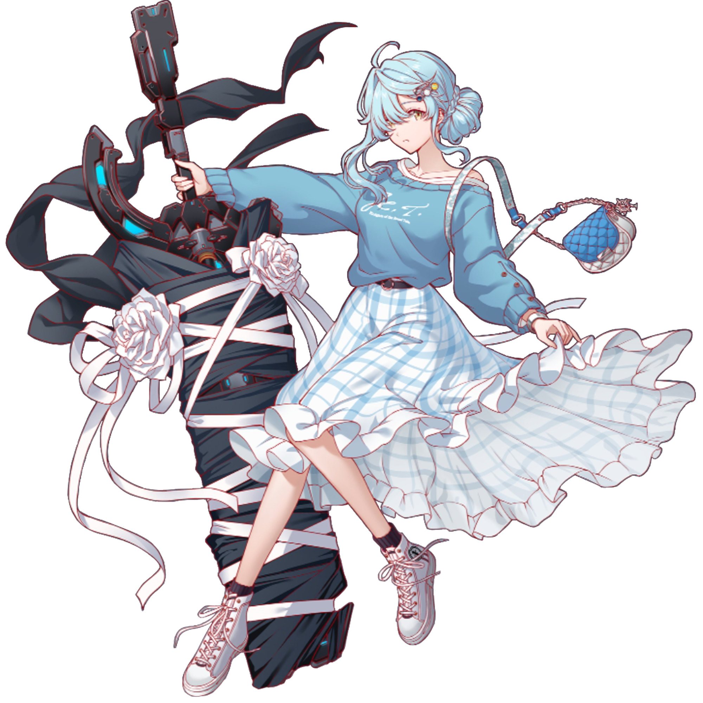
Legend has it that she was a water spirit who resided in a castle built inside a mytical lake. She was also the forest mother of Lancelot, a knight of the Round Table.
Viviane's name first appears in the Legend of King Arthur when Arthur begins searching for a new blade after breaking the ine he had famously pulled from stone. Learning of this incident, Merlin leads Arthur to the lady of the Lake. While some stories say the sword she bestows to Arthur is Excalibur, others say Excalibur was reforged from the damaged remains of the sword in the stone.
It is also said that Vivian raisd the orphaned Sir Lancelot of the Round Table in her watery castle until he reached the age of eighteen.
This incident was one of the factors leading to the decline of King Arthur's power. Seeing that Merlin was absent, Mordred sparked an iprising against the crown. Arthur was gravely injured in the ensuing Battle of Camlann, and he set off for Avalon. According to myth, Viviane was the one who showed him the way.
As he neared his death, Arthur ordered one of his retainers to return Excalibur to the lake. When his retainer did so, a woman's arm everged from the lake's waters and grasped the legendary sword.
In ALICE, Viviane is a warm and friendly to the other women around her, and enjoys widespread popularity and trust not only from the women at the Discarded Data Institute, but also from neighboring groups and businesses.
Bond 1 ▼
Lady of the Lake, famous for bestowing the blade Excalibur unto King Arthur.Legend has it that she was a water spirit who resided in a castle built inside a mytical lake. She was also the forest mother of Lancelot, a knight of the Round Table.
Bond 2 ▼
No one knows where exactly Viviane's lake is located. Perhaps it does not exist at all, for the tales describe it as a mystical lake created by sorcery.Viviane's name first appears in the Legend of King Arthur when Arthur begins searching for a new blade after breaking the ine he had famously pulled from stone. Learning of this incident, Merlin leads Arthur to the lady of the Lake. While some stories say the sword she bestows to Arthur is Excalibur, others say Excalibur was reforged from the damaged remains of the sword in the stone.
It is also said that Vivian raisd the orphaned Sir Lancelot of the Round Table in her watery castle until he reached the age of eighteen.
Bond 3 ▼
Some traditions claim that Viviane was Merin's magical apprentice. During their time toghether, he was so stubborn about wooing her that she sealed him deep beneath the ground.This incident was one of the factors leading to the decline of King Arthur's power. Seeing that Merlin was absent, Mordred sparked an iprising against the crown. Arthur was gravely injured in the ensuing Battle of Camlann, and he set off for Avalon. According to myth, Viviane was the one who showed him the way.
As he neared his death, Arthur ordered one of his retainers to return Excalibur to the lake. When his retainer did so, a woman's arm everged from the lake's waters and grasped the legendary sword.
In ALICE, Viviane is a warm and friendly to the other women around her, and enjoys widespread popularity and trust not only from the women at the Discarded Data Institute, but also from neighboring groups and businesses.
Walpurgis

Bond 1 ▼
A mysterious Folklore whose name originates in the German festival known as Saint Walpurgis Night (also known as Saint Walpurga's Eve). She is highly skilled in the art of attracting and alluring others, whether that be with bad or good intentions.Bond 2 ▼
The Walpurgis in ALICE is heavily influenced by both Saint Walpurga and the witches of Walpurgis Night. Walpurga was a missionary from England dispatched to Germany and the then Frankish Empire. After her death, she was awarded sainthood and her relics were sent back to England on the 1st of May. In the past, Europeans viewed sunset as the start of the new day, so the night of April 30th was dubbed "Walpurgis Night". The same night was also when witches would allegedly congregate to celebrate the coming of spring before disbanding at sunrise. This belief would be combined with Walpurgis's Folklore incarnation, making for an interesting and bizarre pairing of a saint and a witch in the same person.Bond 3 ▼
Walpurgis can more often than not be found in the night areas of ALICE. She likes to hold banquets for Walpurgis Night and invites people to her nighttime area to celebrate. Her mysterious personality and suspicious-looking invitations can often put her invitees off and stir up trouble, but her actions are anything but, and typically involve detoxing unnecessary data from Avatars, among other harmless effects. Though Walpurgis Night is associated with witches, Walpurgis is also associated with Saint Walpurga, and the young girl doesn't perform anything remotely witchcraft-like. This disconnect between her image and her actions actually fascinates Walpurgis, so she doesn't attempt to clear the air about herself.Wang

Bond 1 ▼
A military strategist of the Zhou dynasty who lived around the 11th century BC.Born Jiang Ziya, Taigong Wang was a Taoist monk living in the Kunlun mountains, and legend says he descended the mountains upon receiving the power of the Fengshen Bang from his master. He helped overthrow the tyrannical King Zhou of Shang, who was being controlled by Daji, and was afterward granted the privilege of founding the Qi territory.
Bond 2 ▼
In the religious world, he was a newly-ordained monk trained for forty years in the Kunlun mountains, but to others, he was a strategist of high caliber noted in military texts such as the Six Secret Teachings. This set him apart from his Taoist peers.Alongside the escalating tensions between Shang and Zhou in the mortal world, the gods were forming a plan to create a new world of the divine that would bestow godlike status upon warriors and monks who had lost their lives in battle. Taigong Wang's master Yuanshi Tianzun chose him to execute this plan and descend to the mortal world.
After becoming a strategist for the Zhou, he fought against the Shang, led by Wen Zhong, with his divine deer and his treasured whip that could crush even the skulls of immortals.
Bond 3 ▼
Ji Chang, who was to be the future king of Zhou, once happened upon a strange man who was fishing without bait. As they discussed this curious matter, Ji Chang discovered the other man was far more than he appeared to be.Realizing that the man must be the sage whom the Grand Duke, Ji Chang's grandfather, had been hoping for, Ji Chang called him Taigong Wang, "the Grand Duke's hope", and invited him to be his mentor.
The Taigong Wang in ALICE also enjoys fishing, and she can usually be found sitting by a pond with a rod whenever she has a free moment. According to her, the reason she never fishes at the ocean or in rivers is that she must be ready to answer her lord's call at all times.
Wayland

Bond 1 ▼
A master smith appearing in the Volundarkvida of the Poetic Edda. In myth, he is known as the prince of fairies and a son of the king of the Finns.Bond 2 ▼
Wayland's tale was told among the Germanic peoples even before the Volundarkvida in heroic poems and sagas such as Beowulf, Thidreksaga, and Deor. Wayland and his brother Egil also appear in the intricate carvings of an archaeological artifact known as the Franks Casket.The Volundarkvida is split into two halves. The first half tells the tale of Wayland's birth as a son of the king of the Finns, his life as a smith with his two brothers Egil and Slagfidr, and the brothers' first meeting and lives with their Valkyrie lovers. After spending a while in the mortal realm, however, the Valkyries began to long for the heavens. Eventually, they decided to leave the brothers behind to return to their celestial domain. Egil and Slagfidr chased after the heavenly warriors, but Wayland alone stayed behind, smithing bracelet after bracelet in hopes his beloved would return
However, these bracelets would eventually bring tragedy to Wayland.
Bond 3 ▼
The second half of the Volundarkvida takes a darker turn.The Swedish king Nidhad's men attacked Wayland in his sleep, taking his possessions, crippling his legs, and imprisoning him on an island. There, Nidhad forced Wayland to forge items for him.
When the king's sons visited Wayland's prison, he slaughtered them and fashioned items from their bodies; to the king, he gifted silver goblets made from their skulls, to the queen, jewels from their eyes, and to the princess, a brooch from their teeth. When receiving these gifts, none of the royal family was aware of what had happened to the princes, or what their gifts were made of.
Wayland eventually secured an escape route from the island and created tools for himself in secret. When he finally decided to escape, he appeared before Nidhad and revealed the truth behind the princes' deaths. As the king lamented, Wayland flew off into the sky.
In ALICE, Wayland still has a deeply ingrained sense of vengeance, but her methods of getting revenge are milder than in the past.